<!doctype html>
<html lang="en">
<head>
  <meta charset="utf-8">
  <meta name="viewport" content="width=device-width, initial-scale=1">
  <title>arxiv digest — 2026-05-18</title>
  <style>
:root {
  --bg: #ffffff;
  --fg: #1f2328;
  --muted: #59636e;
  --border: #d0d7de;
  --card: #f6f8fa;
  --link: #0969da;
}
body {
  max-width: 980px;
  margin: 0 auto;
  padding: 2rem 1rem 5rem;
  font-family: -apple-system, BlinkMacSystemFont, "Segoe UI", Helvetica, Arial, sans-serif;
  line-height: 1.55;
  color: var(--fg);
  background: var(--bg);
}
a { color: var(--link); }
img { max-width: 100%; height: auto; }
pre, code { background: var(--card); border-radius: 6px; }
pre { padding: 1rem; overflow-x: auto; }
blockquote { border-left: 4px solid var(--border); padding-left: 1rem; color: var(--muted); }
details { margin: 0.6rem 0; }
summary { cursor: pointer; font-weight: 600; }
.paper-figures-scroll {
  display: flex;
  gap: 1rem;
  overflow-x: auto;
  overscroll-behavior-x: contain;
  padding: 0.75rem 0.25rem 1rem;
  margin: 1rem 0 1.25rem;
  border-top: 1px solid var(--border);
  border-bottom: 1px solid var(--border);
  scroll-snap-type: x proximity;
}
.paper-figure-card {
  flex: 0 0 min(260px, 72vw);
  scroll-snap-align: start;
  background: var(--card);
  border: 1px solid var(--border);
  border-radius: 12px;
  padding: 0.55rem;
}
.paper-figure-card img {
  display: block;
  width: 100%;
  max-height: 240px;
  object-fit: contain;
  background: white;
  border-radius: 8px;
}
.paper-figure-caption {
  display: block;
  margin-top: 0.5rem;
  color: var(--muted);
  font-size: 0.85rem;
}
.figure-strip-hint {
  color: var(--muted);
  font-size: 0.9rem;
  margin-bottom: -0.3rem;
}
</style>
  <!-- MathJax: renders $...$ inline math and $$...$$ display math, plus
       \(...\) and \[...\]. Loaded from the official CDN; works offline
       once cached. Configured to skip code/pre blocks so arxiv IDs that
       look like dollar amounts don't get mangled. -->
  <script>
    window.MathJax = {
      tex: {
        inlineMath: [['$', '$'], ['\\(', '\\)']],
        displayMath: [['$$', '$$'], ['\\[', '\\]']],
        processEscapes: true,
        processEnvironments: true
      },
      options: {
        skipHtmlTags: ['script', 'noscript', 'style', 'textarea', 'pre', 'code'],
        ignoreHtmlClass: 'tex2jax_ignore',
        processHtmlClass: 'tex2jax_process'
      }
    };
  </script>
  <script id="MathJax-script" async
    src="https://cdn.jsdelivr.net/npm/mathjax@3/es5/tex-chtml.js"></script>
</head>
<body>
<header style="background-color: #333; color: white; padding: 15px; margin-bottom: 20px;">
  <h1 style="margin: 0; font-size: 24px;">
    <a href="https://ochelpan.github.io/arXiv_clean/" style="color: white; text-decoration: none;">Main</a>
  </h1>
</header>

<h1>Daily arXiv Report</h1>

<hr>
<p>
<a href="index.html">← Index</a>
 · <a href="papers_02.html">Next →</a>
</p>
<hr>

<h2>Papers 1–20</h2>
<p><a id="paper-2605.15785"></a></p>
<h3 id="dynamical-aspects-of-steady-state-subradiance-detailed-balance-and-its-breakdown">⭐ <a href="http://arxiv.org/abs/2605.15785v1">Dynamical aspects of steady-state subradiance: Detailed balance and its breakdown</a></h3>
<p><strong>Highlighted author(s):</strong> Simon B. Jäger, Murray J. Holland<br>
<strong>Authors:</strong> Athreya Shankar, Simon B. Jäger, Jarrod T. Reilly, Raphael Kaubruegger, Murray J. Holland, Walter Hahn<br>
<strong>Type:</strong> theory · <strong>Category:</strong> statistical mechanics · <strong>PDF:</strong> <a href="https://arxiv.org/pdf/2605.15785v1">https://arxiv.org/pdf/2605.15785v1</a><br>
<strong>Analysis basis:</strong> full PDF text, analyzed in chunks
<strong>Topic relevance:</strong> 🔥 <code>driven-dissipative phase transition</code> <strong>4/5</strong> · 🔥 <code>superradiant laser</code> <strong>4/5</strong> · <code>Dicke superradiance</code> <strong>3/5</strong> · <code>Tavis-Cummings &amp; cavity-many-emitter</code> <strong>3/5</strong> · <code>correlated / nonlocal dissipation</code> <strong>3/5</strong> · <code>methods for driven-dissipative</code> <strong>3/5</strong> · <code>non-equilibrium dynamics</code> <strong>3/5</strong> · <code>non-equilibrium universality</code> <strong>3/5</strong> · <code>correlated cavity matter</code> <strong>2/5</strong> · <code>Keldysh / 2PI / non-Gaussian methods</code> <strong>1/5</strong> · <code>analog quantum simulation</code> <strong>1/5</strong> · <code>entanglement &amp; information structure</code> <strong>1/5</strong></p>
<div class="figure-strip-hint">↔ Scroll figures horizontally</div>
<div class="paper-figures-scroll">
<figure class="paper-figure-card">
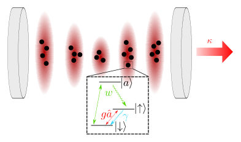
<figcaption class="paper-figure-caption"><b>Fig 1.</b> FIG. 1. Schematic of a bad-cavity laser with atoms trapped at the antinodes of a lossy cavity mode. The level structure of each atom is shown in the inset.</figcaption>
</figure>
<figure class="paper-figure-card">
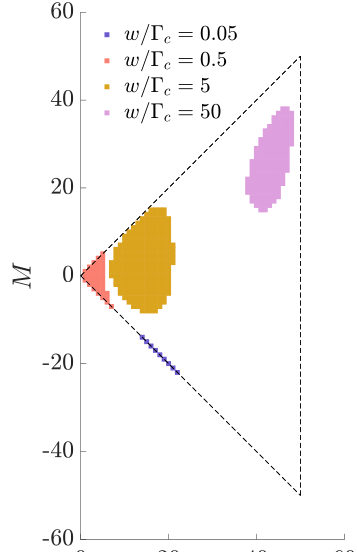
<figcaption class="paper-figure-caption"><b>Fig 2.</b> FIG. 2. Steady-state population distribution for N = 100 atoms and for different values of w. The colored areas depict the highest occupied states that contribute to ∼68% of the steady-state population.</figcaption>
</figure>
<figure class="paper-figure-card">
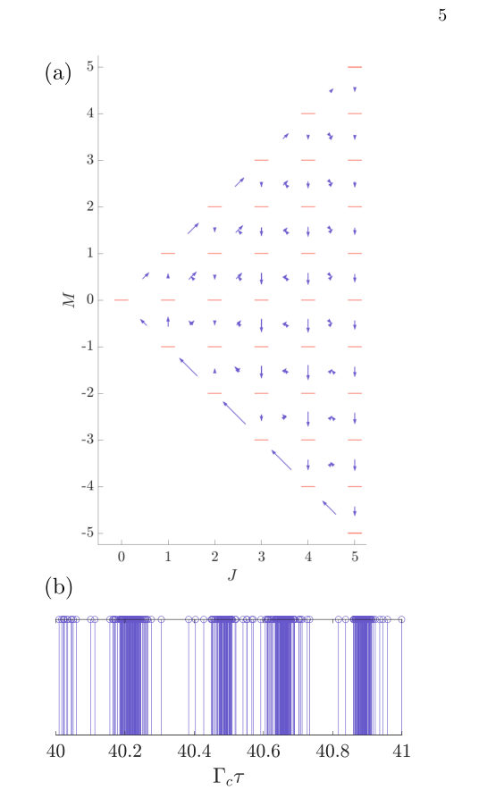
<figcaption class="paper-figure-caption"><b>Fig 3.</b> FIG. 3. (a) Population flow in steady state for the case of N = 100 and w/Γc = 0.2 showing the existence of current loops associated with breaking of time-reversal symmetry. (b) Record of collective emission jump times in a simulated trajec- tory of the Markov chain showing intermittent bursts followed by periods of inactivity. Here, N = 104 and w/Γc = 0.2. The initial time Γcτ = 40 in this plot is chosen to ensure that the system has relaxed to the steady state, which requires timescales Γcτ ≫1.</figcaption>
</figure>
<figure class="paper-figure-card">
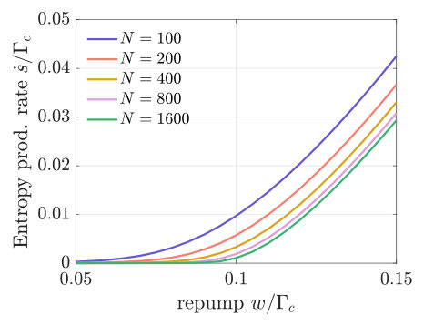
<figcaption class="paper-figure-caption"><b>Fig 4.</b> FIG. 4. Internal entropy production rate (normalized to sys- tem size) as a function of repump for different system sizes. Here, w = γ = 0.1Γc is the critical point indicated by the vertical line.</figcaption>
</figure>
<figure class="paper-figure-card">
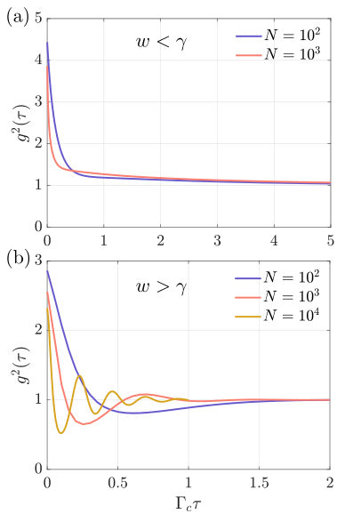
<figcaption class="paper-figure-caption"><b>Fig 5.</b> FIG. 5. Two-photon intensity correlation function g2(τ) at time delay τ for different system sizes, and for (a) w/Γc = 0.09 and (b) w/Γc = 0.2.</figcaption>
</figure>
</div>

<p><strong>Summary.</strong> This work analyzes the dynamics of a bad-cavity laser, showing that a phase transition corresponds precisely to the breakdown of detailed balance in the system's underlying Markov chain. When detailed balance breaks down, the system exhibits non-zero internal entropy production and observable self-pulsing in the cavity light output.</p>
<p><strong>Why it may be interesting.</strong> It provides a concrete, physical realization (bad-cavity laser) where fundamental concepts from non-equilibrium statistical mechanics, such as detailed balance and entropy production, can be directly observed and quantified through quantum dynamics.</p>
<details>
<summary>Detailed structure</summary>
<p><strong>Main problem.</strong> The paper investigates the connection between a dissipative phase transition in the subradiant regime of a bad-cavity laser and the breakdown of detailed balance in the underlying Markov chain.</p>
<p><strong>Main result.</strong> The system exhibits a transition where the dynamics switch from time-reversible (satisfying detailed balance) to time-irreversible (breaking detailed balance) as a parameter is varied.</p>
<p><strong>Method.</strong> The quantum master equation is mapped onto a classical Markov chain description, allowing the analysis of steady-state probability currents and entropy production rates.</p>
<p><strong>Model / system.</strong> The system is a bad-cavity laser involving N incoherently pumped atomic dipoles coupled to a heavily damped cavity mode. The dynamics are analyzed using collective angular momentum states and reduced to a rate equation for probabilities.</p>
<p><strong>Key observables.</strong> Internal entropy production rate ($\dot{S}_i$), net probability currents, and the intensity correlation function $g_2(	au)$ (detecting self-pulsing).</p>
<p><strong>Important parameters / regimes.</strong> The ratio of the repump rate ($w$) to the free-space decay rate ($\gamma$) defines the critical point ($w = \gamma$).</p>
<p><strong>Assumptions / limitations.</strong> The analysis relies on the bad-cavity limit ($\kappa$ large) and mapping the quantum dynamics onto a classical Markov chain description.</p>
<p><strong>Figures summary.</strong> Figures illustrate the population flow and current loops associated with time-reversal symmetry breaking, and plot the entropy production rate ($\dot{s}$) showing a sharp change at the critical point $w = \gamma$.</p>
<p><strong>Paper structure.</strong> The paper first establishes the Markov chain mapping and then analyzes two distinct regimes based on the ratio $w/\gamma$: one satisfying detailed balance and the other exhibiting time-asymmetric currents and entropy production.</p>
</details>
<details>
<summary>Abstract</summary>
<p>The dynamics of dissipative many-body quantum systems sometimes admit an emergent classical description in terms of a Markov chain even though the corresponding state space contains highly entangled states. In particular, a bad-cavity laser is a paradigm system whose dynamics can be formulated as a Markov chain in a two-dimensional state space spanned by collective angular momentum states. In this article, we investigate the connection between a dissipative phase transition that occurs in the subradiant regime of this system in the large atom number limit, and the properties of the underlying Markov chain. In one of the phases, the Markov chain approaches the detailed-balance condition with increasing atom number $N$ and hence becomes effectively time-reversible. This is caused by a collective atomic emission process that effectively reduces the Markov chain to one dimension. In the other phase, we find the emergence of time-asymmetric probability currents in the two-dimensional state space that signals a breakdown of detailed balance. This is accompanied by a macroscopic internal entropy production rate in the Markov chain that scales extensively with the atom number $N$. An observable consequence of the probability currents is a self-pulsing of the cavity light output in this phase, which can be detected as an anti-correlation dip in the intensity correlation function.</p>
</details>
<p><sub><a href="#top">↑ back to top</a></sub></p>

<p><a id="paper-2605.15989"></a></p>
<h3 id="driven-two-level-systems-as-a-minimal-resource-for-remote-entanglement-stabilization">⭐ <a href="http://arxiv.org/abs/2605.15989v1">Driven two-level systems as a minimal resource for remote entanglement stabilization</a></h3>
<p><strong>Highlighted author(s):</strong> Peter Rabl<br>
<strong>Authors:</strong> Philippe Gigon, Adrian Parra-Rodriguez, Joan Agustí, Peter Rabl<br>
<strong>Type:</strong> theory · <strong>Category:</strong> quantum information and computing · <strong>PDF:</strong> <a href="https://arxiv.org/pdf/2605.15989v1">https://arxiv.org/pdf/2605.15989v1</a><br>
<strong>Analysis basis:</strong> full PDF text, analyzed in chunks
<strong>Topic relevance:</strong> <code>correlated / nonlocal dissipation</code> <strong>3/5</strong> · <code>entanglement &amp; information structure</code> <strong>3/5</strong> · <code>methods for driven-dissipative</code> <strong>3/5</strong> · <code>Keldysh / 2PI / non-Gaussian methods</code> <strong>2/5</strong> · <code>Tavis-Cummings &amp; cavity-many-emitter</code> <strong>2/5</strong> · <code>correlated cavity matter</code> <strong>2/5</strong> · <code>driven-dissipative phase transition</code> <strong>2/5</strong> · <code>non-equilibrium dynamics</code> <strong>2/5</strong> · <code>analog quantum simulation</code> <strong>1/5</strong> · <code>interference shaping light</code> <strong>1/5</strong> · <code>non-equilibrium universality</code> <strong>1/5</strong></p>
<div class="figure-strip-hint">↔ Scroll figures horizontally</div>
<div class="paper-figures-scroll">
<figure class="paper-figure-card">
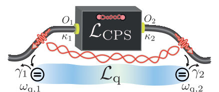
<figcaption class="paper-figure-caption"><b>Fig 1.</b> Figure 1: Schematics of the basic chiral quantum network considered in this work. Here, a source (black box) produces a stream of correlated photons that drive two distant target qubits into an entangled steady state. See text for more details.</figcaption>
</figure>
<figure class="paper-figure-card">
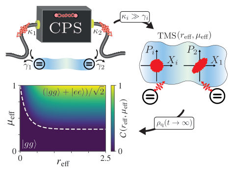
<figcaption class="paper-figure-caption"><b>Fig 2.</b> Figure 2: Operative definition of distributable entanglement. In the Markovian regime (κi ≫γi), the target qubits see an effective TMS environment, which is fully characterized by the effective squeezing strength reff and effective purity µeff. These parameters, in turn, can be evaluated from a set of two-time correlation functions of the CPS, see Eq. (9) and Eq. (12). For a given reff and µeff the concurrence Cd ≡C(reff, µeff) of the resulting qubit steady state is given in Eq. (13) and plotted in the lower left corner. The white dashed line marks the minimal conditions above which Cd &gt; 0. Overall, this approach allows us to characterize the CPS in terms of a single, physically intuitive...</figcaption>
</figure>
<figure class="paper-figure-card">
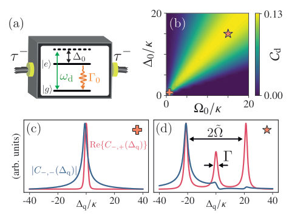
<figcaption class="paper-figure-caption"><b>Fig 3.</b> Figure 3: (a) Schematics of a CPS consisting of a single TLS. The TLS is driven by an external field of frequency ωd and decays into the two waveguides with rates κ and into an independent environment with rate Γ0. (b) Plot of the distributable entanglement as a function of the drive strength, Ω0, and the detuning of the drive, ∆0, and for target qubits tuned in resonance with the Mollow sidebands (∆q,1 = −∆q,2 = ˜Ω). The two symbols indicate the weak- driving (cross) and strong-driving (star) regimes. For both regimes, the dependence of the two relevant correlation func- tions Re{C11 −+(∆q)} ∼N1 and |C12 −−(∆q)| ∼|M| on the detuning ∆q is sketched in the respective plots in (c) and (d)....</figcaption>
</figure>
<figure class="paper-figure-card">
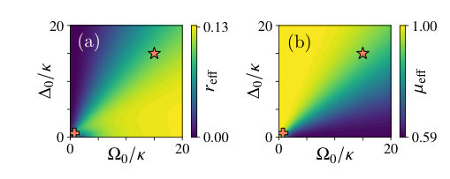
<figcaption class="paper-figure-caption"><b>Fig 4.</b> Figure 4: Plots of (a) the effective squeezing strength and (b) the effective purity for a driven TLS and for the same parameters as in Fig. 3(b). The opposite trend of those two quantities results in optimal entanglement for ∆0 ≈Ω0.</figcaption>
</figure>
<figure class="paper-figure-card">
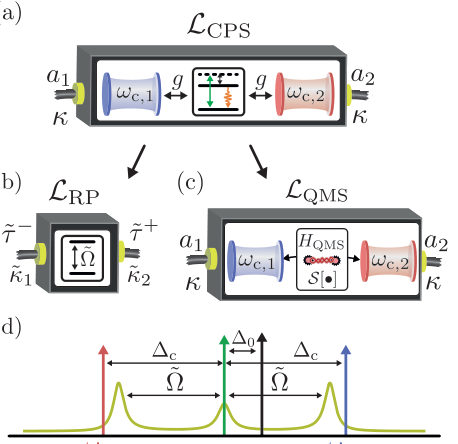
<figcaption class="paper-figure-caption"><b>Fig 5.</b> Figure 5: (a) The CPS consists of a driven, dissipative TLS coherently coupled to two bosonic modes a1 and a2 with strength g. We assume that the modes selectively emit into one or the other waveguide, that is O1 = a1, O2 = a2. The TLS has the same parameters as shown in Fig. 3(a). (b) In the resolved-Purcell regime, ˜Ω≫κ ≫g, two cavities can be adiabatically eliminated to obtain an effective model for the TLS, with jump operators O1 = ˜τ −, O2 = ˜τ + and decay rates ˜κ1 and ˜κ2. (c) In the opposite regime, where Γ0 ≫g, κ, one can adiabatically eliminate the TLS, and model the re- maining dynamics of the two cavities by a quadratic TMS Lindbladian. (d) Sketch of the relevant frequencies and...</figcaption>
</figure>
</div>

<p><strong>Summary.</strong> This paper develops a theoretical framework to quantify how entanglement can be remotely stabilized between two qubits using a correlated photon source derived from a driven two-level system. The authors demonstrate that while the basic setup yields some entanglement, optimizing the system by adding filter cavities is crucial to approach the theoretical maximum. This has direct implications for building quantum networks using solid-state defects.</p>
<p><strong>Why it may be interesting.</strong> This work provides a detailed theoretical roadmap for engineering entanglement distribution in solid-state quantum networks, showing how cavity engineering can overcome intrinsic limitations of simple sources.</p>
<details>
<summary>Detailed structure</summary>
<p><strong>Main problem.</strong> The paper analyzes the autonomous stabilization of remote entanglement between two distant qubits using the correlated photon emission from a driven two-level system (TLS) source.</p>
<p><strong>Main result.</strong> While a bare TLS shows some entanglement, achieving near-maximal entanglement requires coupling the TLS to additional filter cavities to enhance specific correlated emission events.</p>
<p><strong>Method.</strong> The analysis develops a general framework using master equations and two-time correlation functions to quantify distributable entanglement, comparing different physical regimes (e.g., Purcell vs. Qubit-mediated squeezing).</p>
<p><strong>Model / system.</strong> The system involves two target qubits coupled to a correlated photon source, which is modeled as a driven TLS interacting with optical cavities. The dynamics are governed by a master equation incorporating source, qubit, and interaction terms.</p>
<p><strong>Key observables.</strong> Distributable entanglement (quantified by concurrence, $C_d$), effective two-mode squeezing parameters ($ ext{reff}, \mu_{    ext{eff}}$), and the steady-state density matrix.</p>
<p><strong>Important parameters / regimes.</strong> TLS drive strength ($\Omega_0$), cavity decay rate ($\kappa$), qubit detunings ($\Delta_q$), and the ratio of decay rates ($\gamma/\kappa$).</p>
<p><strong>Assumptions / limitations.</strong> The analysis relies on the Rotating-Wave Approximation (RWA) and various adiabatic elimination techniques depending on the coupling regime (e.g., Purcell or QMS).</p>
<p><strong>Figures summary.</strong> Figures illustrate schematics of the quantum network, plot the achievable concurrence ($C_d$) versus driving parameters ($\Omega_0, \Delta_0$), and show the dependence of entanglement on the ratio of decay rates ($\gamma/\kappa$).</p>
<p><strong>Paper structure.</strong> The paper progresses from a general framework for entanglement quantification to specific applications using a bare TLS, then systematically explores enhancements by coupling the TLS to structured cavities, analyzing different physical regimes (Purcell, QMS) to maximize entanglement.</p>
</details>
<details>
<summary>Abstract</summary>
<p>We analyze the autonomous stabilization of remote entanglement by driving two distant qubits with the output of a correlated photon source. By treating the qubits as idealized entanglement detectors, we develop a general framework to quantify the maximum amount of entanglement that can be remotely stabilized in this way with a given photon source. We then apply this approach to evaluate the suitability of a single driven two-level system as a minimal resource for autonomous entanglement distribution schemes. While our analysis confirms the presence of distributable entanglement in the Mollow sidebands of a bare two-level system, we show that stabilizing close to maximally entangled states requires additional filter cavities that enhance the relevant correlated emission events compared to other processes. We identify optimized driving and cavity parameters and explain the achievable amount of entanglement in different regimes in terms of an effective two-mode squeezing model. These insights are particularly relevant for quantum networks based on photons or phonons in solid-state systems, where isolated spins, impurity centers, or other two-level defects are readily available, while alternative sources of correlated photons are difficult to realize.</p>
</details>
<p><sub><a href="#top">↑ back to top</a></sub></p>

<p><a id="paper-2605.16131"></a></p>
<h3 id="extensive-mixed-state-entanglement-in-kinetically-constrained-superradiance"><a href="http://arxiv.org/abs/2605.16131v1">Extensive mixed-state entanglement in kinetically constrained superradiance</a></h3>
<p><strong>Authors:</strong> Lucas Winter, Jan Kumlin, Thomas Pohl, Andreas Nunnenkamp<br>
<strong>Type:</strong> both · <strong>Category:</strong> other · <strong>PDF:</strong> <a href="https://arxiv.org/pdf/2605.16131v1">https://arxiv.org/pdf/2605.16131v1</a><br>
<strong>Analysis basis:</strong> full PDF text, analyzed in chunks
<strong>Topic relevance:</strong> 🔥 <code>Dicke superradiance</code> <strong>4/5</strong> · 🔥 <code>Tavis-Cummings &amp; cavity-many-emitter</code> <strong>4/5</strong> · 🔥 <code>analog quantum simulation</code> <strong>4/5</strong> · 🔥 <code>correlated / nonlocal dissipation</code> <strong>4/5</strong> · 🔥 <code>methods for driven-dissipative</code> <strong>4/5</strong> · <code>Rydberg arrays</code> <strong>3/5</strong> · <code>correlated cavity matter</code> <strong>3/5</strong> · <code>driven-dissipative phase transition</code> <strong>3/5</strong> · <code>entanglement &amp; information structure</code> <strong>3/5</strong> · <code>non-equilibrium dynamics</code> <strong>2/5</strong> · <code>non-equilibrium universality</code> <strong>2/5</strong> · <code>superradiant laser</code> <strong>2/5</strong> · <code>Keldysh / 2PI / non-Gaussian methods</code> <strong>1/5</strong> · <code>quantum measurements</code> <strong>1/5</strong> · <code>scars &amp; prethermalization</code> <strong>1/5</strong></p>
<div class="figure-strip-hint">↔ Scroll figures horizontally</div>
<div class="paper-figures-scroll">
<figure class="paper-figure-card">
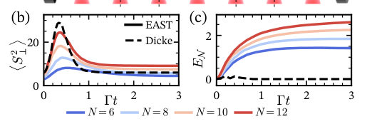
<figcaption class="paper-figure-caption"><b>Fig 1.</b> Figure 1. Rydberg-blockaded superradiance. (a) We consider N atoms coupled to a cavity mode of frequency ωc. A Rydberg (anti-)blockade locally gates the atom-cavity transition (2); for the EAST constraint, Pj = nj−1, atom j couples only if its left neighbor is excited. (b,c) Dynamics of the Rydberg Tavis–Cummings model (1) (solid) and the Dicke model (black dashed) for different system sizes. Panel (b) shows the transverse spin coherence ⟨S2 ⊥⟩= ⟨S2 x + S2 y⟩; panel (c) shows mixed-state entanglement quantified by logarithmic negativity EN (12). Quantum trajectory simulations for κ/g = 40, ∆= 0, and Ntraj = 600.</figcaption>
</figure>
<figure class="paper-figure-card">
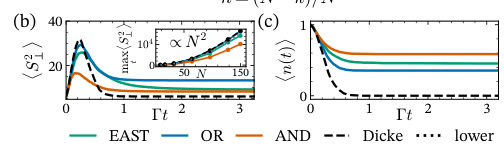
<figcaption class="paper-figure-caption"><b>Fig 2.</b> Figure 2. Emission rate and constrained superradiant dynamics. (a) Emission rate ⟨F †F⟩k/N 2 (6) as a function of n = 1 −k/N for N = 24. The shaded region is the allowed window for local Boolean constraints including AND (orange), EAST (green) and OR (blue) with an upper bound given by the Dicke model and a lower bound given by Eq. (7). (b) Exact dynamics of ⟨S2 ⊥⟩= ⟨S2 x + S2 y⟩according to Eq. (3). All constrained models retain a superradiant burst. Inset: Peak heights scale as maxt⟨S2 ⊥⟩∝N 2 according to DTWA simulations (see SM [38]). (c) Mean excitation density ⟨n(t)⟩= ⟨Sz⟩/N + 1/2. The Dicke model decays to the ground state, while constraints arrest the decay at finite density....</figcaption>
</figure>
<figure class="paper-figure-card">
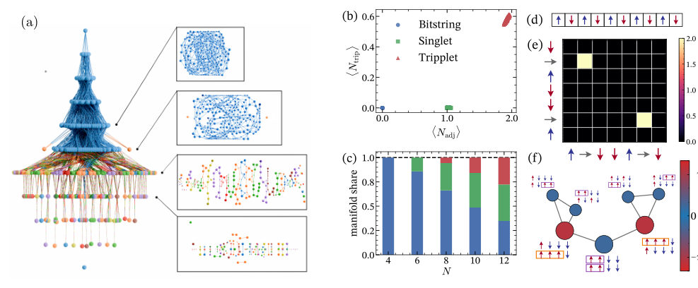
<figcaption class="paper-figure-caption"><b>Fig 3.</b> Figure 3. Hilbert-space fragmentation and dark-manifold structure. (a) Numerically constructed Lindblad connectivity graph for N = 10. Nodes represent spin configurations in the computational basis, grouped into planes by total magnetization Sz. The non-hermitian Hamiltonian Hnh = (χ −iΓ/2) F †F connects states in-plane (insets), while the jump operator Leff (4) connects states vertically. At small Sz, the graph fragments into many disconnected components (shown in different colors). (b) Dark state classification obtained from exact diagonalization of F †F and identification of its kernel for N = 10. Local adjacent-pair Nadj and triple Ntri counts categorize the dark state manifold into...</figcaption>
</figure>
<figure class="paper-figure-card">
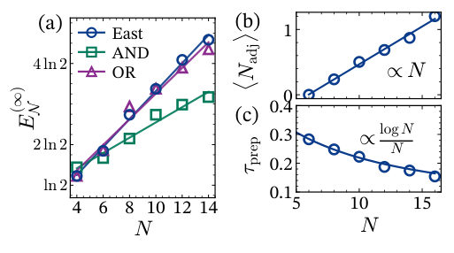
<figcaption class="paper-figure-caption"><b>Fig 4.</b> Figure 4. Superradiantly accelerated generation of extensive mixed-state entanglement. (a) Stationary logarithmic negativity E(∞) N (12) across a half-chain bipar- tition, obtained from density matrices reconstructed from quantum-trajectory simulations of the effective spin model (4). The scaling is approximately linear in N for the EAST (blue), OR (purple), and AND (green) constraints, showing extensive mixed-state entanglement. (b) Adjacent pair count ⟨Nadj⟩≡P</figcaption>
</figure>
<figure class="paper-figure-card">
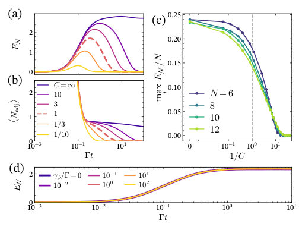
<figcaption class="paper-figure-caption"><b>Fig 5.</b> Figure 5. Robustness to single-site loss and common- mode dephasing. (a,b) Time evolution of the half-chain logarithmic negativity EN and adjacent pair count ⟨Nadj⟩for N = 12, showing that the collective-decay correlations persist over a broad cooperativity window. (c) Peak logarithmic negativity per site maxt EN /N versus inverse cooperativity for N = 6, 8, 10, 12; the dashed line marks 1/C = 1. (d) EN (t) for different common-mode dephasing values γϕ (blue to yellow) for N = 10, demonstrating collapse onto the lossless dynamics over γϕ/Γ = 0, . . . , 102. Panels (a)–(c) use the adiabatically eliminated EAST-constrained spin model with unconstrained single-site loss, κ = 1, and ∆= 0. Panel...</figcaption>
</figure>
</div>

<p><strong>Summary.</strong> The paper demonstrates that imposing local kinetic constraints on an ensemble of quantum emitters undergoing superradiance generates robust, extensive mixed-state entanglement. This effect is fast, retaining the characteristic superradiant scaling, and can be realized in neutral-atom cavity QED setups. It offers a general method for the dissipative engineering of highly entangled quantum states.</p>
<p><strong>Why it may be interesting.</strong> This work provides a concrete, experimentally viable framework for engineering quantum resources (entangled dark states) using collective quantum phenomena (superradiance) in solid-state or neutral-atom platforms, which is highly relevant to quantum simulation and quantum networking.</p>
<details>
<summary>Detailed structure</summary>
<p><strong>Main problem.</strong> To investigate how adding local kinetic constraints to Dicke superradiance affects entanglement generation, particularly in the mixed state of emitters.</p>
<p><strong>Main result.</strong> Local kinetic constraints convert superradiance into a fast dissipative route that generates extensive mixed-state entanglement, while retaining the characteristic superradiant scaling ($\propto N^2$ intensity, $\propto (\log N)/N$ time).</p>
<p><strong>Method.</strong> The analysis uses a combination of analytical derivations (e.g., lower bounds for emission rates) and numerical simulations of the Lindblad master equation, employing techniques like adiabatic elimination and quantum trajectory methods.</p>
<p><strong>Model / system.</strong> The system is an ensemble of quantum emitters (modeled as Rydberg atoms) coupled to a single optical cavity mode, governed by a generalized Dicke model incorporating local Boolean kinetic constraints (AND, EAST, OR).</p>
<p><strong>Key observables.</strong> Mixed-state entanglement (logarithmic negativity $E_N$), emission rate $\langle F^\dagger F 
angle$, and the adjacent pair count $\langle N_{	ext{adj}} 
angle$ used as an entanglement witness.</p>
<p><strong>Important parameters / regimes.</strong> The analysis explores the bad-cavity regime, the ratio of coupling strengths to decay rates ($g/\omega_c$), and the impact of various noise sources like single-site and common-mode dephasing.</p>
<p><strong>Assumptions / limitations.</strong> The analysis often relies on the bad-cavity limit and the adiabatic elimination of intermediate states, though robustness checks against realistic Rydberg tails and dephasing are performed.</p>
<p><strong>Figures summary.</strong> Figures illustrate the superradiance dynamics, showing the characteristic scaling of the emission rate and entanglement. They also compare the entanglement measures ($E_N$, $\langle N_{	ext{adj}} 
angle$) under different constraints and noise conditions.</p>
<p><strong>Paper structure.</strong> The paper progresses from establishing the failure of entanglement generation in standard Dicke superradiance to introducing local constraints. It then analyzes the resulting dynamics, proving the existence of entanglement via specific correlators, and finally testing the robustness of this effect against realistic imperfections like decay and noise.</p>
</details>
<details>
<summary>Abstract</summary>
<p>Dicke superradiance by an ensemble of quantum emitters produces a collective burst of radiation, but no entanglement in the mixed state of the emitters. We show that adding a local kinetic constraint between the emitters generates extensive mixed-state entanglement, while otherwise preserving all key features of Dicke superradiance. Specifically, for any local Boolean constraint, we analytically derive a lower bound for the emission rate which implies a peak intensity $\propto N^2$ and a peak time $\propto (\log N)/N$ with number of spins $N$. This effect enables the superradiantly accelerated preparation of entangled dark states. Hereby, Hilbert-space fragmentation of the Dicke ladder leads to an exponentially branching decay tree that generates a hierarchy of dark states. Importantly, these disconnected manifolds include exponentially many long-range entangled singlet dark states. The explored kinetic constraints and superradiant dynamics can be realized in neutral-atom arrays coupled to an optical cavity, and we suggest a simple and accessible witness to detect the predicted mixed-state entanglement in such experiments. Moreover, we show that entanglement generation is robust against atomic decay and collective dephasing, and should be observable under recently reported experimental conditions. Our results, thereby, offer a general framework and experimentally viable approach for the dissipative engineering of entangled dark states enhanced by superradiance.</p>
</details>
<p><sub><a href="#top">↑ back to top</a></sub></p>

<p><a id="paper-2605.15945"></a></p>
<h3 id="generating-collective-spin-cat-states-via-photon-number-measurements-near-the-dicke-critical-point"><a href="http://arxiv.org/abs/2605.15945v1">Generating collective spin cat states via photon-number measurements near the Dicke critical point</a></h3>
<p><strong>Authors:</strong> Taiga Nakamoto, Shohei Imai, Kazuaki Takasan<br>
<strong>Type:</strong> theory · <strong>Category:</strong> other · <strong>PDF:</strong> <a href="https://arxiv.org/pdf/2605.15945v1">https://arxiv.org/pdf/2605.15945v1</a><br>
<strong>Analysis basis:</strong> full PDF text, analyzed in chunks
<strong>Topic relevance:</strong> 🔥 <code>Dicke superradiance</code> <strong>4/5</strong> · 🔥 <code>Tavis-Cummings &amp; cavity-many-emitter</code> <strong>4/5</strong> · 🔥 <code>measurement-induced transitions</code> <strong>4/5</strong> · <code>analog quantum simulation</code> <strong>3/5</strong> · <code>correlated cavity matter</code> <strong>3/5</strong> · <code>driven-dissipative phase transition</code> <strong>3/5</strong> · <code>quantum measurements</code> <strong>3/5</strong> · <code>correlated / nonlocal dissipation</code> <strong>2/5</strong> · <code>entanglement &amp; information structure</code> <strong>2/5</strong> · <code>exotic spin models in light-matter</code> <strong>2/5</strong> · <code>methods for driven-dissipative</code> <strong>2/5</strong> · <code>non-equilibrium dynamics</code> <strong>2/5</strong> · <code>non-equilibrium universality</code> <strong>2/5</strong> · <code>superradiant laser</code> <strong>2/5</strong> · <code>Keldysh / 2PI / non-Gaussian methods</code> <strong>1/5</strong></p>
<div class="figure-strip-hint">↔ Scroll figures horizontally</div>
<div class="paper-figures-scroll">
<figure class="paper-figure-card">
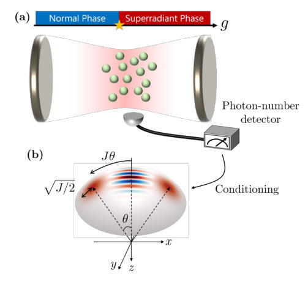
<figcaption class="paper-figure-caption"><b>Fig 1.</b> FIG. 1. (a) Schematic picture of the protocol for generating SCSs. We first prepare an atomic ensemble that is strongly coupled to the cavity field near the critical point of the super- radiant phase transition. We then perform a photon-number measurement on the cavity field; conditioning on a photon- number outcome heralds the preparation of an SCS in the atomic ensemble. (b) Schematic illustration of the Wigner function of the SCSs. We focus on the SCS, which is a super- position of two coherent spin states pointing in the directions (+θ, 0) and (−θ, 0). We characterize the size of the SCS as an arc length Jθ normalized by the quantum fluctuation p</figcaption>
</figure>
<figure class="paper-figure-card">
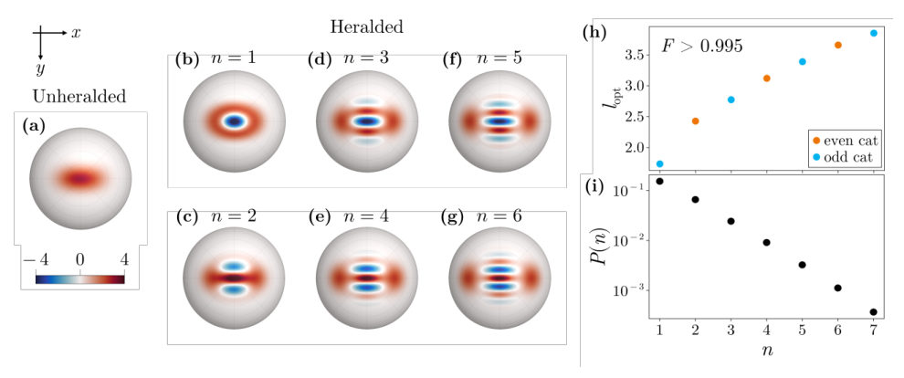
<figcaption class="paper-figure-caption"><b>Fig 2.</b> FIG. 2. The Wigner function W(θ, ϕ) around θ = 0 of (a) the unheralded state ρ = Trphoton[|G⟩⟨G|] and (b)-(g) the n-photon heralded atomic state |ψn⟩for the outcomes n = 1, . . . , 6. The Wigner function of ρ is Gaussian-like, while that of |ψn⟩has negative values and interference patterns. The interference patterns in the Wigner function indicate the production of SCSs. Heralding converts the Gaussian-like state into a non-Gaussian state with parity-dependent interference fringes. (h) The size of the SCS lopt as a function of n. When n is even (odd), the parity of the SCS is even (odd). lopt increases as the measured photon number n increases. The fidelities F(θopt) between the ideal SCS...</figcaption>
</figure>
<figure class="paper-figure-card">
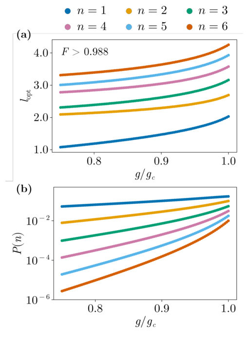
<figcaption class="paper-figure-caption"><b>Fig 3.</b> FIG. 3. (a) The size of the SCS lopt for n = 1, . . . , 6 as a function of the coupling strength g. As g approaches the critical point gc, lopt increases. Especially, lopt is significantly enhanced near the critical point g = gc. The fidelities F(θopt) are more than 0.988 for all the data points. (b) The measure- ment probability of n photons P(n) as a function of g. As g approaches gc, P(n) exponentially increases. Here, we set N = 200.</figcaption>
</figure>
<figure class="paper-figure-card">
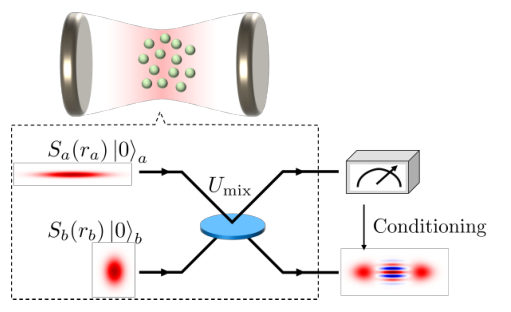
<figcaption class="paper-figure-caption"><b>Fig 4.</b> FIG. 5. The interpretation of the SCS generation protocol from the perspective of the generalized photon subtraction protocol in quantum optics [31]. Near the critical point of the superradiant phase transition, the ground state prepares the beam-split squeezed states. One mode corresponds to the cavity field, and the other mode corresponds to the collective spin excitation of the atomic ensemble. The photon-number measurement on the cavity field can conditionally prepare a SCS similar to the quantum optical case.</figcaption>
</figure>
<figure class="paper-figure-card">
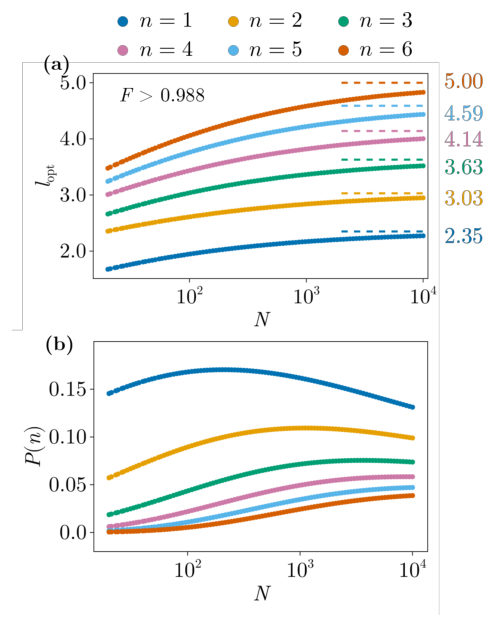
<figcaption class="paper-figure-caption"><b>Fig 5.</b> FIG. 4. (a) The size of the SCS lopt for n = 1, . . . , 6 as a function of the atom number N. lopt increases as N increases. We also plot the saturation value in the thermodynamic limit as dashed lines (Eq. (23)). lopt approaches the saturation value as N increases. The fidelities F(θopt) are more than 0.988 for all the data points. (b) The measurement probability of n photons P(n) as a function of N. P(n) increases as N increases for small N, while P(n) starts to decrease for large N. Here, we set g = gc.</figcaption>
</figure>
</div>

<p><strong>Summary.</strong> This theoretical work proposes a method to generate large, high-fidelity collective spin cat states in an atomic ensemble by leveraging the physics near the superradiant phase transition. The key technique involves performing a photon-number measurement on the cavity field, which acts as a quantum filter to herald the desired non-classical atomic state. This demonstrates a powerful synergy between cavity QED criticality and quantum state engineering.</p>
<p><strong>Why it may be interesting.</strong> This work provides a concrete, measurement-based pathway to generate complex, non-classical many-body states (SCSs) using controllable quantum optical phenomena (criticality), which is highly relevant for quantum simulation and quantum memory.</p>
<details>
<summary>Detailed structure</summary>
<p><strong>Main problem.</strong> The paper addresses the challenge of generating high-fidelity collective spin cat states (SCSs) within a cavity-coupled atomic ensemble.</p>
<p><strong>Main result.</strong> They demonstrate that performing a photon-number measurement on the cavity field near the superradiant critical point heralds SCSs with enhanced size and fidelity.</p>
<p><strong>Method.</strong> The protocol relies on exploiting strong light-matter entanglement and anti-squeezing inherent to the critical regime, mathematically linking the process to generalized photon subtraction.</p>
<p><strong>Model / system.</strong> The system is modeled by the Dicke model, describing N two-level atoms coupled to a single cavity mode. The analysis utilizes the Hamiltonian and examines the system's behavior near the superradiant phase transition.</p>
<p><strong>Key observables.</strong> SCS size ($\ell_{	ext{opt}}$), Fidelity ($F(	heta)$), Wigner function negativity, and the probability distribution of measured photons ($P(n)$).</p>
<p><strong>Important parameters / regimes.</strong> The critical coupling strength ($g_c$), the atom number ($N$), and the photon number ($n$) measured.</p>
<p><strong>Assumptions / limitations.</strong> The analysis often focuses on the resonant case ($\omega_{	ext{cav}} = \omega_{	ext{atom}}$) but confirms the mechanism's applicability off-resonance. It assumes the ground state of the equilibrium Dicke model.</p>
<p><strong>Figures summary.</strong> Figures illustrate the protocol schematic (Fig. 1a), the Wigner function showing SCS non-classicality (Fig. 1b), and quantitative dependencies of $\ell_{	ext{opt}}$ and $P(n)$ on the coupling strength $g$ and the photon number $n$ (Figs. 2 and 6).</p>
<p><strong>Paper structure.</strong> The paper introduces the Dicke model and the concept of SCSs. It then details the measurement-based protocol, showing how photon detection projects the atomic state into a heralded SCS. Finally, it analyzes the scaling laws and the physical mechanism connecting this to generalized photon subtraction.</p>
</details>
<details>
<summary>Abstract</summary>
<p>We propose a method for generating collective spin cat states in a cavity-coupled atomic ensemble by exploiting strong light-matter entanglement and anti-squeezing associated with the superradiant phase transition. We numerically and analytically demonstrate that the cat states can be heralded by photon-number measurement on the ground state of the Dicke model. The near-critical regime enhances both the cat-state size and the probability of obtaining larger photon-number outcomes, and outcomes with larger photon numbers yield even larger cat states. We also show that a thermodynamic-limit analysis clarifies the generation mechanism and connects it to a natural light-matter analogue of generalized photon subtraction for optical cat-state generation. These results suggest that exploiting criticality in strongly coupled light-matter systems could open new directions for matter-based many-body quantum technologies.</p>
</details>
<p><sub><a href="#top">↑ back to top</a></sub></p>

<p><a id="paper-2605.16256"></a></p>
<h3 id="polariton-becs-theory-and-concepts"><a href="http://arxiv.org/abs/2605.16256v1">Polariton BECs: Theory and Concepts</a></h3>
<p><strong>Authors:</strong> Fabrice Laussy<br>
<strong>Type:</strong> theory · <strong>Category:</strong> quantum gases · <strong>PDF:</strong> <a href="https://arxiv.org/pdf/2605.16256v1">https://arxiv.org/pdf/2605.16256v1</a><br>
<strong>Analysis basis:</strong> full PDF text, analyzed in chunks
<strong>Topic relevance:</strong> 🔥 <code>correlated cavity matter</code> <strong>4/5</strong> · <code>Tavis-Cummings &amp; cavity-many-emitter</code> <strong>3/5</strong> · <code>analog quantum simulation</code> <strong>3/5</strong> · <code>driven-dissipative phase transition</code> <strong>3/5</strong> · <code>methods for driven-dissipative</code> <strong>3/5</strong> · <code>non-equilibrium dynamics</code> <strong>3/5</strong> · <code>Keldysh / 2PI / non-Gaussian methods</code> <strong>2/5</strong> · <code>correlated / nonlocal dissipation</code> <strong>2/5</strong> · <code>entanglement &amp; information structure</code> <strong>2/5</strong> · <code>non-equilibrium universality</code> <strong>2/5</strong> · <code>Dicke superradiance</code> <strong>1/5</strong> · <code>exotic spin models in light-matter</code> <strong>1/5</strong> · <code>superradiant laser</code> <strong>1/5</strong></p>
<div class="figure-strip-hint">↔ Scroll figures horizontally</div>
<div class="paper-figures-scroll">
<figure class="paper-figure-card">
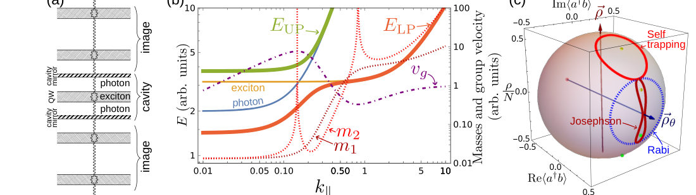
<figcaption class="paper-figure-caption"><b>Fig 1.</b> FIG. 1. The one-particle polariton picture. (a) Sketch of a microcavity as two mirrors sandwiching a quantum well, respectively trapping photons and excitons, whose confinement brings in the strong-coupling regime. By the method of images, the cavity mirrors can be removed and the confined polariton becomes propagating again, as originally envisioned by Hopfield in bulk materials. (b) The lower ELP and upper EUP polariton dispersions, arising from the strong coupling of the exciton and photon parabolic dispersions with largely differing masses, so that the exciton appears flat over a broad range of momenta. The strong anharmonicity of the polariton dispersions leads to a plethora of sui...</figcaption>
</figure>
<figure class="paper-figure-card">
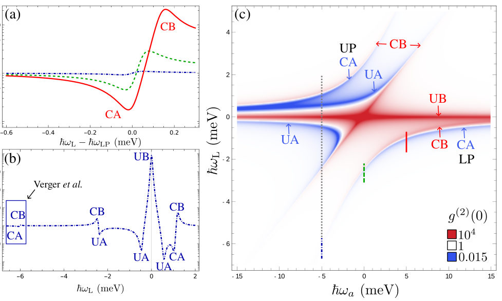
<figcaption class="paper-figure-caption"><b>Fig 2.</b> FIG. 2. The two-particle polariton picture. (a) Polariton blockade with g(2)(0) &lt; 1 as a function of the laser detuning from the lower polariton branch, for three exciton-photon detuning, with the dashed green line at resonance, solid-red at positive cavity detuning (exciton-like LP) and dash-dotted black at negative cavity detuning (photon-like LP). (b) Same as (a) for the negative detuning case and over an enlarged spanning window of laser energy (now shown relative to the exciton), to also include the UP branch, with panel (a) identified in the box ≈−6meV. Considerably stronger correlations are accessible around other resonances of the system, most of them not visible in...</figcaption>
</figure>
</div>

<p><strong>Summary.</strong> This survey reviews the theory of polariton condensates, which are hybrid light-matter quasi-particles. It details the theoretical tools needed to describe their many-body physics, contrasting the quantum description with simpler classical analogues. The work highlights that understanding the system requires careful consideration of both linear and non-interacting effects alongside strong correlations.</p>
<p><strong>Why it may be interesting.</strong> It bridges the gap between standard BEC theory (quantum gases) and quantum optics, providing a rich platform to study non-equilibrium, driven-dissipative many-body physics.</p>
<details>
<summary>Detailed structure</summary>
<p><strong>Main problem.</strong> The paper surveys the theoretical concepts governing the formation, coherence, and dynamics of polariton condensates, emphasizing their unique nature compared to atomic BECs.</p>
<p><strong>Main result.</strong> The dynamics can be understood by mapping the system to a coherent state evolution, which mathematically mirrors classical coupled harmonic oscillators, suggesting linear effects are often undervalued.</p>
<p><strong>Method.</strong> The analysis employs a combination of one-particle quantum superposition descriptions (Bloch sphere) and many-body quantum-optical density matrix formalisms.</p>
<p><strong>Model / system.</strong> The system is composed of exciton-polaritons, which are quasi-particles formed by the strong coupling of excitons (matter) and cavity photons (light) in a microcavity. The Hamiltonian describes the coupled light-matter system.</p>
<p><strong>Key observables.</strong> Two-polariton reduced density matrix ($
ho^{(2)}$), two-photon correlation function ($g^{(2)}(0)$), and coherence measures.</p>
<p><strong>Important parameters / regimes.</strong> Detuning, effective masses ($m_{ex}, m_C$), and the degree of interaction strength.</p>
<p><strong>Assumptions / limitations.</strong> The text argues that while the quantum picture is fundamental, much phenomenology can be explained using semi-classical or non-interacting approximations.</p>
<p><strong>Figures summary.</strong> Figures illustrate the unfolding of light-matter interaction, the two-particle polariton picture, and the two-photon correlation function $g^{(2)}(0)$ showing bunching, antibunching, and no correlation.</p>
<p><strong>Paper structure.</strong> The structure moves from defining the polariton quasi-particle (one-particle picture) to describing the many-body quantum state using density matrices, and finally comparing the quantum vs. classical descriptions of the dynamics.</p>
</details>
<details>
<summary>Abstract</summary>
<p>Polaritons are a superposition of light and matter, that combine Strong Interferences (of light) with Weak Interactions (of excitons), making them WISI (Weakly-Interacting, Strongly-Interfering) particles. Their condensation is the main highlight of a field which occupies a unique position at the intersection of quantum optics, condensed matter physics and nonlinear dynamics of driven, dissipative systems. This chapter surveys selected theoretical concepts of polariton condensates' formation, coherence and dynamics, with an emphasis on their distinctions from their atomic counterparts and on points of ongoing controversy. We argue that linear and non-interacting effects are undervalued in polariton physics, and that a significant part of the phenomenology -- including bosonic correlations and coherence buildup -- can often be understood without invoking strong interactions or genuine quantum effects.</p>
</details>
<p><sub><a href="#top">↑ back to top</a></sub></p>

<p><a id="paper-2605.15882"></a></p>
<h3 id="propagation-of-conditional-nonclassical-reservoir-states-during-quantum-decoherence"><a href="http://arxiv.org/abs/2605.15882v1">Propagation of conditional nonclassical reservoir states during quantum decoherence</a></h3>
<p><strong>Authors:</strong> Jargalsaikhan Artag, Koki Awaya, Takumi Kanezashi, Haruya Nagata, Daisuke Tsukayama, Moe Shimada, Jun-ichi Shirakashi<br>
<strong>Type:</strong> theory · <strong>Category:</strong> other · <strong>PDF:</strong> <a href="https://arxiv.org/pdf/2605.15882v1">https://arxiv.org/pdf/2605.15882v1</a><br>
<strong>Analysis basis:</strong> full PDF text, analyzed in chunks
<strong>Topic relevance:</strong> 🔥 <code>measurement-induced transitions</code> <strong>4/5</strong> · 🔥 <code>quantum measurements</code> <strong>4/5</strong> · <code>correlated / nonlocal dissipation</code> <strong>3/5</strong> · <code>entanglement &amp; information structure</code> <strong>3/5</strong> · <code>methods for driven-dissipative</code> <strong>3/5</strong> · <code>Keldysh / 2PI / non-Gaussian methods</code> <strong>2/5</strong> · <code>driven-dissipative phase transition</code> <strong>2/5</strong> · <code>non-equilibrium dynamics</code> <strong>2/5</strong> · <code>interference shaping light</code> <strong>1/5</strong> · <code>non-equilibrium universality</code> <strong>1/5</strong></p>
<div class="figure-strip-hint">↔ Scroll figures horizontally</div>
<div class="paper-figures-scroll">
<figure class="paper-figure-card">
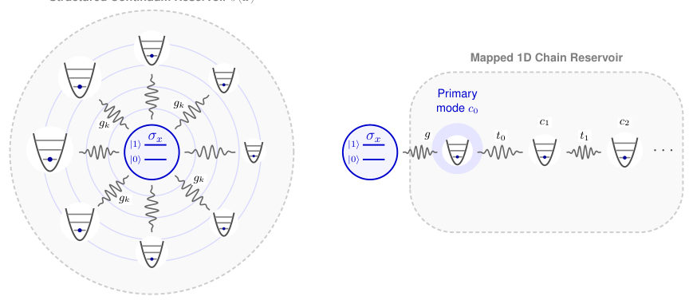
<figcaption class="paper-figure-caption"><b>Fig 1.</b> FIG. 1. Spin-boson reservoir and mapped-chain representation. A qubit coupled longitudinally to a structured bosonic reservoir is mapped from the star geometry to an equivalent one-dimensional chain. The qubit couples directly to the first chain coordinate, while the remaining chain modes transport reservoir excitation away from the system. The chain coordinate is a mapped spectral-reservoir coordinate, not a real-space coordinate.</figcaption>
</figure>
<figure class="paper-figure-card">
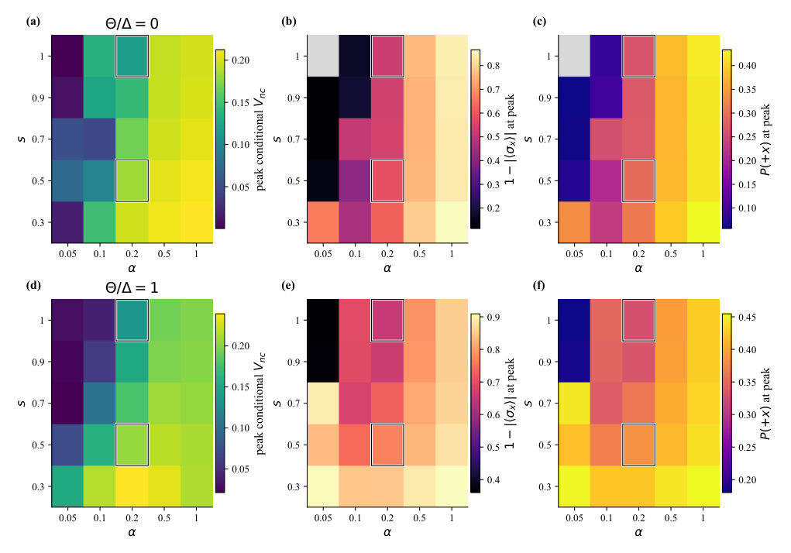
<figcaption class="paper-figure-caption"><b>Fig 2.</b> FIG. 2. Parameter landscape for conditional reservoir nonclassicality. Sweep over coupling α, spectral exponent s, and temperature Θ/∆. The panels show peak conditional Wigner nonclassicality, qubit coherence loss at the same event, and postselection probability for zero temperature (top row) and finite temperature (bottom row). White boxes mark the four main cases used throughout this study: α = 0.2, s = 0.5 or s = 1.0, and Θ/∆= 0 or 1.</figcaption>
</figure>
<figure class="paper-figure-card">
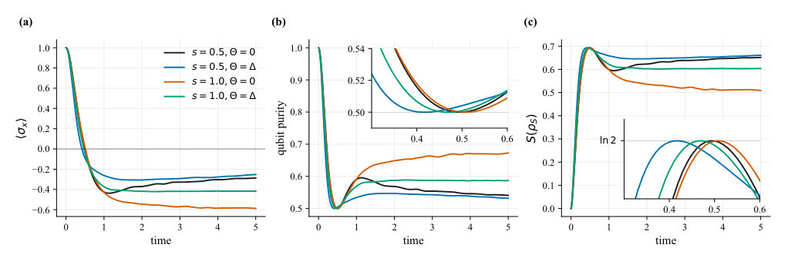
<figcaption class="paper-figure-caption"><b>Fig 3.</b> FIG. 3. Four-case qubit dynamics. Time evolution of (a) signed qubit coherence ⟨σx⟩, (b) qubit purity, and (c) qubit entropy in the pure mapped-chain representation, S(ρS). Insets in (b) and (c) zoom the near-maximal-mixing window; the reference values are Tr ρ2 S = 1/2 and ln 2, respectively. The sign of ⟨σx⟩retains phase information.</figcaption>
</figure>
<figure class="paper-figure-card">
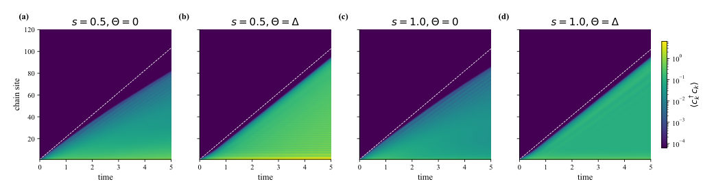
<figcaption class="paper-figure-caption"><b>Fig 4.</b> FIG. 4. Reservoir excitation transport in the mapped chain. Mapped-chain occupation ⟨c† kck⟩for the four selected cases. Panels (a-d) show s = 0.5, Θ/∆= 0; s = 0.5, Θ/∆= 1; s = 1.0, Θ/∆= 0; and s = 1.0, Θ/∆= 1, respectively, all at α = 0.2. The excitation generated during decoherence moves away from the qubit in the mapped chain coordinate. The dashed white line is the hopping-scale guide k = vguidet, with vguide = 2 maxn |tn|.</figcaption>
</figure>
<figure class="paper-figure-card">
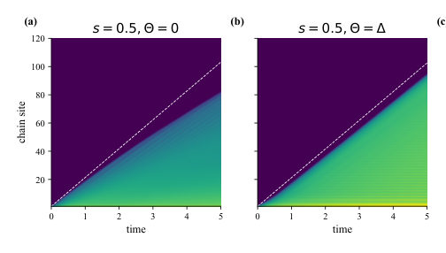
<figcaption class="paper-figure-caption"><b>Fig 5.</b> Figure 3(a-c) shows the qubit dynamics for the four selected cases. The signed coherence ⟨σx⟩starts at one and decays rapidly as system-bath entanglement forms. When ⟨σx⟩becomes negative, the transverse Bloch com- ponent has changed phase relative to the initial +x direc- tion; this sign change is not a change in the sign of a decay rate. The purity approaches the maximally mixed value near the strongest entangling part of the dynamics, while the qubit entropy S(ρS) rises toward ln 2, confirming that coherence loss is accompanied by strong system-reservoir correlation in the pure mapped-chain representation.</figcaption>
</figure>
</div>

<p><strong>Summary.</strong> This theoretical paper explores how quantum coherence lost from a qubit during decoherence is imprinted onto the surrounding environment, or reservoir. By analyzing the reservoir state conditioned on a measurement outcome, the authors demonstrate that the environment can retain nonclassical quantum features, such as Wigner negativity, which are otherwise lost in the averaged, unconditional description.</p>
<p><strong>Why it may be interesting.</strong> This work provides a detailed, phase-space picture of decoherence, showing that the environment acts as a memory that retains measurement-dependent quantum information, which is crucial for understanding quantum measurement processes.</p>
<details>
<summary>Detailed structure</summary>
<p><strong>Main problem.</strong> The paper investigates the information content carried by the environment (reservoir) during quantum decoherence, specifically contrasting the state when the system is measured (conditional) versus when it is simply traced out (unconditional).</p>
<p><strong>Main result.</strong> The reservoir state, when conditioned on a specific qubit readout, develops measurable nonclassical features like Wigner negativity and interference fringes that are absent in the unconditional reservoir state.</p>
<p><strong>Method.</strong> The authors employ tensor-network dynamics to evolve the joint qubit-reservoir state, mapping the continuous bosonic bath to a discrete 1D chain representation for analysis.</p>
<p><strong>Model / system.</strong> The model is based on spin-boson decoherence, coupling a two-level system (qubit) to a structured bosonic reservoir. The dynamics are analyzed by mapping the bath to a 1D chain Hamiltonian.</p>
<p><strong>Key observables.</strong> Wigner negativity ($   ext{Vnc}$), qubit coherence ($\langle\sigma_x
angle$), reservoir occupation ($\langle c^\dagger_k c_k 
angle$), and the conditional/unconditional reservoir state.</p>
<p><strong>Important parameters / regimes.</strong> Spectral exponent ($s$), temperature ($\Theta/\Delta$), and coupling strengths ($\alpha$).</p>
<p><strong>Assumptions / limitations.</strong> The analysis relies on mapping the continuous bosonic bath to a finite 1D chain, which is an approximation for the full reservoir dynamics.</p>
<p><strong>Figures summary.</strong> Figures illustrate the mapping from the spin-boson geometry to the 1D chain, parameter landscapes showing peak conditional nonclassicality, and time evolution plots comparing conditional vs. unconditional reservoir properties.</p>
<p><strong>Paper structure.</strong> The paper progresses by first establishing the model and mapping, then calculating and comparing the conditional and unconditional reservoir states using Wigner functions, and finally analyzing how temperature and spectral properties control the visibility of this conditional nonclassical imprint.</p>
</details>
<details>
<summary>Abstract</summary>
<p>Decoherence is usually described as the loss of local quantum coherence after tracing over environmental degrees of freedom. This reduced description, however, hides the reservoir state that carries the lost coherence. Here we show that spin-boson decoherence can write a postselectable nonclassical imprint into a structured bosonic reservoir. We map zero- and finite-temperature reservoirs to one-dimensional chains, evolve the joint qubit-reservoir state with tensor-network dynamics, and reconstruct the Wigner function of a time-adaptive leading collective reservoir coordinate after transverse qubit readout. The conditioned mapped-reservoir coordinate develops Wigner negativity and interference fringes that are strongly suppressed in the unconditional reservoir state. A parameter sweep shows that the spectral exponent and temperature control the visibility of this conditional nonclassicality, the mapped-chain excitation transport, and the degree to which a single collective coordinate captures the imprint. These results provide a branch-resolved phase-space picture of decoherence: the reservoir is not only a sink for qubit coherence, but can carry a measurement-conditioned nonclassical state in a collective mapped coordinate.</p>
</details>
<p><sub><a href="#top">↑ back to top</a></sub></p>

<p><a id="paper-2605.16029"></a></p>
<h3 id="born-rule-statistical-dynamical-quantum-phase-transitions-under-measurement"><a href="http://arxiv.org/abs/2605.16029v1">Born-rule statistical dynamical quantum phase transitions under measurement</a></h3>
<p><strong>Authors:</strong> Guan-Hua Chen, Guo-Yi Zhu<br>
<strong>Type:</strong> theory · <strong>Category:</strong> statistical mechanics · <strong>PDF:</strong> <a href="https://arxiv.org/pdf/2605.16029v1">https://arxiv.org/pdf/2605.16029v1</a><br>
<strong>Analysis basis:</strong> full PDF text, analyzed in chunks
<strong>Topic relevance:</strong> 🔥 <code>measurement-induced transitions</code> <strong>4/5</strong> · <code>driven-dissipative phase transition</code> <strong>3/5</strong> · <code>non-equilibrium dynamics</code> <strong>3/5</strong> · <code>non-equilibrium universality</code> <strong>3/5</strong> · <code>quantum measurements</code> <strong>3/5</strong> · <code>Keldysh / 2PI / non-Gaussian methods</code> <strong>2/5</strong> · <code>methods for driven-dissipative</code> <strong>2/5</strong> · <code>analog quantum simulation</code> <strong>1/5</strong> · <code>correlated / nonlocal dissipation</code> <strong>1/5</strong> · <code>entanglement &amp; information structure</code> <strong>1/5</strong></p>
<div class="figure-strip-hint">↔ Scroll figures horizontally</div>
<div class="paper-figures-scroll">
<figure class="paper-figure-card">
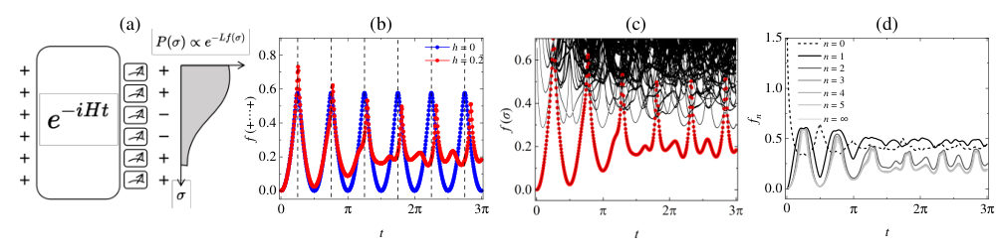
<figcaption class="paper-figure-caption"><b>Fig 1.</b> FIG. 1. Dynamical free energy spectrum. (a) Schematic of the model: a quantum quench dynamics by Ising model in ferromagnetic phase followed by measurements in X basis. Repeating the protocol yields a Born-distributed ensemble of bitstrings σ, whose Born probability P(σ) ∝e−Lf(σ) defines the effective free energy f(σ), conditioned upon σ (the temporal boundary condition of spacetime path integral). (b) The evolution of post-selected dynamical free energy f(+⋯+) under PBC. The nonanalytic period t∗without transverse field is exactly π/2 labeled by vertical dashed lines. (c) The full energy spectrum f(σ) for h = 0.2. Red dots highlight f(+⋯+), which acts as the “ground state” except near the...</figcaption>
</figure>
<figure class="paper-figure-card">
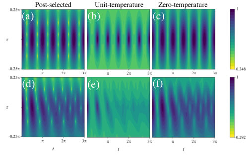
<figcaption class="paper-figure-caption"><b>Fig 2.</b> FIG. 3. Statistically erased zeros in the complex time plane with field h = 0 (upper panel) and h = 0.2 (lower panel). Finite-size (L = 12) evolution of e−f(+⋯+) and e−fn in the complex time plane τ ∈[−π/4, π/4]. (a), (d) Post-selected e−f(+⋯+) = P 1/L(+⋯+) : Periodic zeros discretely lie on the complex plane (not the real axis τ = 0 as the critical real time in Fig. 1(b)). (b), (e) Unit-temperature e−f1: Discrete zeros at τ ≠0 and nonanalytic kinks on the real axis are both washed out by averaging. (c), (f) Ground-state e−f∞: Dis- crete zeros in the complex plane are covered by lower-energy config- urations. Although the finite-size level crossing still remains in the plane, sufficiently...</figcaption>
</figure>
<figure class="paper-figure-card">
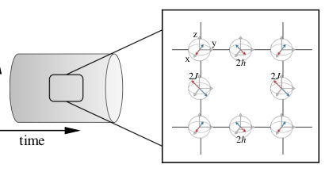
<figcaption class="paper-figure-caption"><b>Fig 3.</b> FIG. 4. Bulk measurement protocol. Schematic representation of a 2D cluster state on the Lieb lattice, whose spatial periodic bound- ary is defined on a cylinder (left). The corresponding time evolu- tion operator of one Trotter step is U(∆t) = eihX∆teiJZZ∆t whose unit cell of projective measurement on a plaquette is shown on the right. Measurement bases are represented on the Bloch spheres as cos (θ/2) ∣0⟩+eiϕ sin(θ/2) ∣1⟩and positive (negative) measurement outcomes are denoted by red (blue) arrows. Corresponding angles related to the Ising model ignoring the time step are labeled beside arrows (mentioned as (θ, ϕ) in the text).</figcaption>
</figure>
<figure class="paper-figure-card">
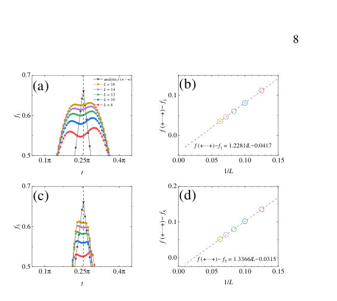
<figcaption class="paper-figure-caption"><b>Fig 4.</b> FIG. 5. Finite-size level inversion. Average dynamical free energy (a) f1 and (c) f5 in different system sizes around the first critical time with h = 0.2 (indicated by dashed lines). The analytic f(+⋯+) (black) is obtained by Eq. 6. Compared with f1, high-moment f5 showing a narrower half-height width lies closer to f(+⋯+). (b), (d): The difference between fn and analytic f(+⋯+) as a func- tion of 1/L is labeled by corresponding colors with the fitted linear equation. This can be regard as the gap between the low tempera- ture thermal state and paramagnetic state. Negative intercepts man- ifest the post-selected gap can be closed by finite but larger size as L = 1.2281/0.0417 ≈30 and L =...</figcaption>
</figure>
<figure class="paper-figure-card">
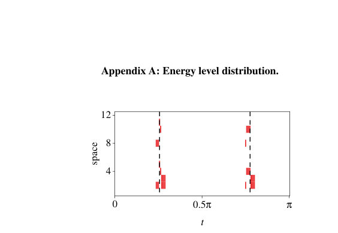
<figcaption class="paper-figure-caption"><b>Fig 5.</b> FIG. 6. Ground-state trajectory. The bitstring of ground state is represented in the Pauli-X basis at time 0 ∼π and each pixel denotes ∣+⟩(white) or ∣−⟩(red) for one qubit at a particular time. The critical times are labeled by dashed lines.</figcaption>
</figure>
</div>

<p><strong>Summary.</strong> This work develops a statistical framework to study Dynamical Quantum Phase Transitions (DQPTs) by analyzing the ensemble of states resulting from quantum measurements on an Ising chain. By using moment averaging of the dynamical free energy, the authors show that while single trajectories exhibit sharp nonanalyticities, the statistical average smooths these out. This provides a crucial theoretical tool for interpreting experimental measurements in quantum devices.</p>
<p><strong>Why it may be interesting.</strong> It provides a rigorous statistical framework to study non-equilibrium quantum dynamics, showing how measurement fundamentally alters the observable signatures of quantum phase transitions, which is crucial for interpreting experimental quantum measurements.</p>
<details>
<summary>Detailed structure</summary>
<p><strong>Main problem.</strong> The paper investigates Dynamical Quantum Phase Transitions (DQPTs) by analyzing the statistical ensemble of post-measurement quantum states, moving beyond single-trajectory analysis.</p>
<p><strong>Main result.</strong> The statistical average (Born rule) of the ensemble washes out the nonanalytic signatures of DQPTs seen in single trajectories, but the framework successfully characterizes statistical DQPTs using the average dynamical free energy.</p>
<p><strong>Method.</strong> The authors characterize the ensemble using the $n$-th moment average dynamical free energy ($f_n$), mapping the distribution to a statistical model, and employing analytic continuation into the complex time plane.</p>
<p><strong>Model / system.</strong> The primary model is the one-dimensional transverse-field Ising chain, subjected to a quantum quench followed by measurement, which induces a mixed state described by the Born probability distribution.</p>
<p><strong>Key observables.</strong> Average dynamical free energy ($f_n$), multifractal dimensions ($D_q$), and the vanishing/emergence of Yang-Lee-Fisher zeros in the complex time plane.</p>
<p><strong>Important parameters / regimes.</strong> The moment index $n$ acts as an effective inverse temperature, allowing crossover from high-temperature ($n=0$) to zero-temperature ($n	o\infty$) limits.</p>
<p><strong>Assumptions / limitations.</strong> The analysis assumes the measurement-induced mixed state is distinct from standard finite-temperature mixed states, and that the system can be analyzed via moment averaging.</p>
<p><strong>Figures summary.</strong> Figures illustrate the evolution of the dynamical free energy spectrum, showing level condensation near critical times, and compare the complex time evolution of post-selected vs. statistically averaged quantities, demonstrating the disappearance of zeros in the latter.</p>
<p><strong>Paper structure.</strong> The paper first introduces the statistical characterization via $f_n$ for the Ising model. It then analyzes the crossover from multifractality to delocalization at the critical time. Finally, it uses analytic continuation to show how the Born-rule average affects the detection of DQPT signatures compared to single-trajectory methods.</p>
</details>
<details>
<summary>Abstract</summary>
<p>Dynamical quantum phase transitions (DQPTs) occur at times when a quantum state exhibits a nonanalytic change in its return probability. This can be viewed as the probability of collapsing the evolved state to the initial state by quantum measurement. However, the initial wave function usually has exponentially small amplitude in the late time evolved state. Here we perform statistical characterization for all the possible post-measurement states distributed according to the Born's rule, by sampling a one-dimensional quantum Ising chain after a quantum quench dynamics. The statistical ensemble can also be viewed as a mixed state when the time evolved state is subjected to maximally dephasing noise in a certain basis. We map the distribution to a statistical model and characterize its effective "energy" spectrum, and introduce the average dynamical free energy, establishing a framework for the statistical DQPTs. We show the recovering of DQPT under high-moment average and a delocalized level distribution following critical times. Through analytic continuation into the complex time plane, we demonstrate the vanishing of Yang-Lee-Fisher zeros and the emergent level crossing near critical times. Finally, we propose a measurement-based quantum computation protocol to simulate the unitary evolution via single-qubit measurements on a two-dimensional cluster state. Our results provide a way for experimentally investigating statistical DQPTs in quantum devices, shedding light on the structured circuit sampling with insights from DQPT and generalizing the understanding of mixed state due to decoherence beyond equilibrium.</p>
</details>
<p><sub><a href="#top">↑ back to top</a></sub></p>

<p><a id="paper-2605.15339"></a></p>
<h3 id="energy-space-quantum-walks-thermalization-without-state-convergence"><a href="http://arxiv.org/abs/2605.15339v1">Energy-space quantum walks: Thermalization without state convergence</a></h3>
<p><strong>Authors:</strong> Alana Spak dos Santos, Renato Moreira Angelo<br>
<strong>Type:</strong> theory · <strong>Category:</strong> statistical mechanics · <strong>PDF:</strong> <a href="https://arxiv.org/pdf/2605.15339v1">https://arxiv.org/pdf/2605.15339v1</a><br>
<strong>Analysis basis:</strong> full PDF text, analyzed in chunks
<strong>Topic relevance:</strong> 🔥 <code>non-equilibrium dynamics</code> <strong>4/5</strong> · <code>driven-dissipative phase transition</code> <strong>3/5</strong> · <code>methods for driven-dissipative</code> <strong>3/5</strong> · <code>non-equilibrium universality</code> <strong>3/5</strong> · <code>scars &amp; prethermalization</code> <strong>3/5</strong> · <code>Keldysh / 2PI / non-Gaussian methods</code> <strong>2/5</strong> · <code>analog quantum simulation</code> <strong>2/5</strong> · <code>correlated / nonlocal dissipation</code> <strong>1/5</strong> · <code>entanglement &amp; information structure</code> <strong>1/5</strong></p>
<div class="figure-strip-hint">↔ Scroll figures horizontally</div>
<div class="paper-figures-scroll">
<figure class="paper-figure-card">
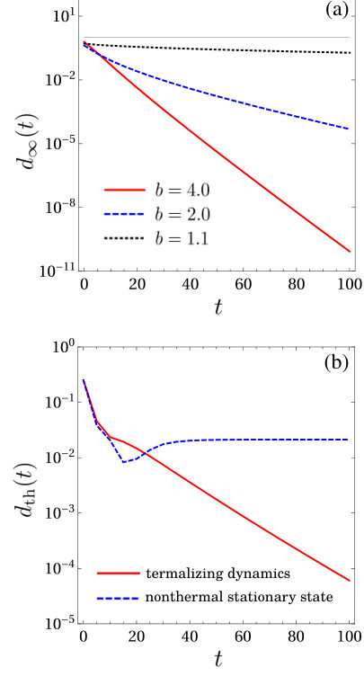
<figcaption class="paper-figure-caption"><b>Fig 1.</b> FIG. 1. Equilibration and thermalization in the incoherent energy- space dynamics for a system with equally spaced energies En = nE. The simulations use a truncated ladder n = 0, 1, . . . , N with N = 50, fixed lazy probability p0 = 0.1, and a normalized discrete Gaussian initial distribution (“cold state”) ℘0(n) ∝e−(n−n0)2/(2σ2)</figcaption>
</figure>
<figure class="paper-figure-card">
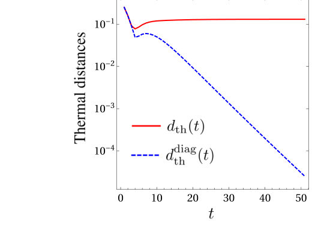
<figcaption class="paper-figure-caption"><b>Fig 2.</b> FIG. 2. Thermal distance dth(t) (solid red line) and its dephased counterpart ddiag th (t) (dashed blue line), where ρβt is the Gibbs state with the same instantaneous mean energy as ρt. While the de- phased dynamics relaxes to the Gibbs state, dth(t) saturates at a finite value, revealing a persistent coherence-induced deviation from ther- mal equilibrium. Parameters as described in the text.</figcaption>
</figure>
<figure class="paper-figure-card">
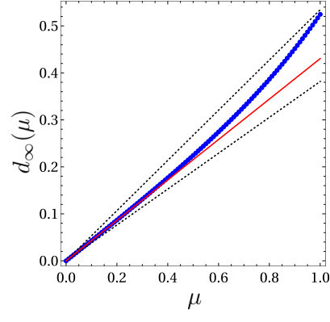
<figcaption class="paper-figure-caption"><b>Fig 3.</b> FIG. 4. Asymptotic thermal distance d∞(µ) as a function of the coherence parameter µ. Blue dots denote numerical results, dashed black lines indicate analytical bounds, and the red solid line corre- sponds to the first-order perturbative prediction. The linear scaling at small µ confirms the perturbative analysis, while deviations at larger µ signal the onset of nonperturbative effects. Parameters as described in the text.</figcaption>
</figure>
<figure class="paper-figure-card">
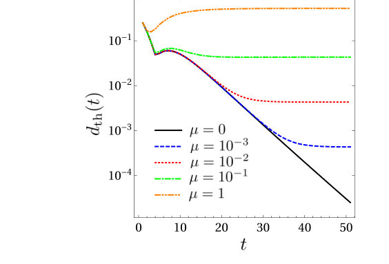
<figcaption class="paper-figure-caption"><b>Fig 4.</b> FIG. 3. Time evolution of the thermal distance dth(t) for different values of the coherence parameter µ. For µ = 0, the dynamics re- duces to the classical case and dth(t) →0, while for µ &gt; 0 the distance saturates at a finite value that increases with µ, indicating a growing coherence-induced deviation from the Gibbs state. Parame- ters as described in the text.</figcaption>
</figure>
</div>

<p><strong>Summary.</strong> This paper introduces energy-space quantum walks to study thermalization, showing that energy populations can equilibrate to a Gibbs state even when the full quantum state fails to converge to that state. By quantifying the deviation using the thermal distance, the authors demonstrate that coherence acts as a persistent, controllable source of non-thermal behavior, separating classical equilibration from quantum corrections.</p>
<p><strong>Why it may be interesting.</strong> This work provides a rigorous, quantitative framework to distinguish between classical relaxation processes and genuine quantum non-equilibrium effects in open quantum systems, which is crucial for understanding thermalization in realistic quantum simulators.</p>
<details>
<summary>Detailed structure</summary>
<p><strong>Main problem.</strong> The paper investigates the fundamental difference between energy equilibration (population relaxation) and full quantum state thermalization in quantum walks.</p>
<p><strong>Main result.</strong> It establishes a minimal scenario of 'thermalization without state convergence,' where energy populations reach a classical Gibbs distribution, but the full quantum state retains a persistent, coherence-induced deviation from the thermal manifold.</p>
<p><strong>Method.</strong> The analysis uses an effective-dynamics approach, mapping the system onto an energy ladder and comparing the time evolution of the full density operator against its diagonal (population) components.</p>
<p><strong>Model / system.</strong> The model is an energy-space quantum walk, where the configuration space is mapped onto a ladder of energy eigenlevels. The dynamics are governed by a unitary, collision-assisted quantum channel $\Phi_\mu$ parameterized by a coherence strength $\mu$.</p>
<p><strong>Key observables.</strong> Thermal distance ($d_{th}(t)$) and the difference between the full thermal distance and the dephased distance, which quantifies the coherence contribution.</p>
<p><strong>Important parameters / regimes.</strong> The coherence parameter $\mu$, which controls the quantum corrections, and the bias $b = p_-/p_+$ in the classical limit.</p>
<p><strong>Assumptions / limitations.</strong> The analysis assumes the underlying classical dynamics is ergodic and that the system can be effectively described by a minimal collision-assisted quantum walk structure.</p>
<p><strong>Figures summary.</strong> Figures illustrate the time evolution of the thermal distance, showing saturation at a finite, non-zero value when coherence ($\mu>0$) is present, contrasting this with the zero saturation seen in purely thermalizing cases.</p>
<p><strong>Paper structure.</strong> The paper progresses by first establishing the classical limit (birth-death-lazy dynamics) leading to Gibbs equilibrium. It then embeds this into a unitary, coherent model, systematically decomposing the evolution into classical (population) and quantum (coherence) parts to quantify the separation.</p>
</details>
<details>
<summary>Abstract</summary>
<p>We introduce energy-space quantum walks as a minimal framework to investigate equilibration, thermalization, and irreversibility from an effective-dynamics perspective. By mapping the configuration space of a walk onto a ladder of energy eigenlevels, we reinterpret thermalization as transport in energy space, independently of microscopic system--bath details. At the classical level, the resulting birth--death--lazy dynamics leads to equilibration of the energy distribution and, under suitable conditions, to a Gibbs stationary state. We then embed this dynamics into a unitary, collision-assisted model in which coherence is controlled by a single parameter. A central result is a structural decoupling between population dynamics and coherence generation: while the populations evolve according to the classical process and relax to the Gibbs distribution, the full quantum state exhibits a persistent coherence-induced deviation from the thermal manifold. This establishes a minimal scenario of thermalization without state convergence, where equilibration occurs at the level of populations but not at the level of the full density operator. We quantify this effect using the thermal distance to the Gibbs state and derive perturbative bounds that relate the long-time deviation to classical transport properties. Our results show that coherence acts as a controllable and quantitatively bounded source of nonthermal behavior, providing a clear separation between classical equilibration and genuinely quantum corrections.</p>
</details>
<p><sub><a href="#top">↑ back to top</a></sub></p>

<p><a id="paper-2605.15277"></a></p>
<h3 id="beyond-unitary-quantum-simulation-open-system-approaches-to-quantum-chemistry-toward-quantum-advantage"><a href="http://arxiv.org/abs/2605.15277v1">Beyond Unitary Quantum Simulation: Open-System Approaches to Quantum Chemistry toward Quantum Advantage</a></h3>
<p><strong>Authors:</strong> Michael Marthaler, Elias Zapusek, Florentin Reiter<br>
<strong>Type:</strong> theory · <strong>Category:</strong> other · <strong>PDF:</strong> <a href="https://arxiv.org/pdf/2605.15277v1">https://arxiv.org/pdf/2605.15277v1</a><br>
<strong>Analysis basis:</strong> full PDF text, analyzed in chunks
<strong>Topic relevance:</strong> 🔥 <code>methods for driven-dissipative</code> <strong>4/5</strong> · <code>Keldysh / 2PI / non-Gaussian methods</code> <strong>3/5</strong> · <code>correlated / nonlocal dissipation</code> <strong>3/5</strong> · <code>driven-dissipative phase transition</code> <strong>3/5</strong> · <code>non-equilibrium dynamics</code> <strong>2/5</strong> · <code>non-equilibrium universality</code> <strong>2/5</strong> · <code>Kondo &amp; dissipative impurity</code> <strong>1/5</strong> · <code>analog quantum simulation</code> <strong>1/5</strong></p>
<div class="figure-strip-hint">↔ Scroll figures horizontally</div>
<div class="paper-figures-scroll">
<figure class="paper-figure-card">
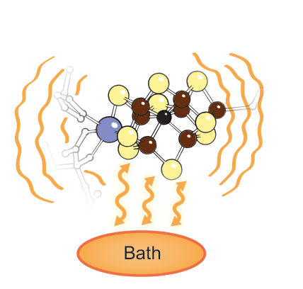
<figcaption class="paper-figure-caption"><b>Fig 1.</b> Figure 1: Molecule (FeMoco cluster) coupled to a ther- mal environment, illustrating the open-system setting that pervades chemistry, condensed-matter physics, and materials science. Standard quantum algorithms largely abstract away this system–bath interaction, treating the electronic problem as closed and unitary. The dissipa- tive simulation framework discussed in this review in- stead takes the environmental coupling as a computa- tional resource rather than a nuisance.</figcaption>
</figure>
<figure class="paper-figure-card">
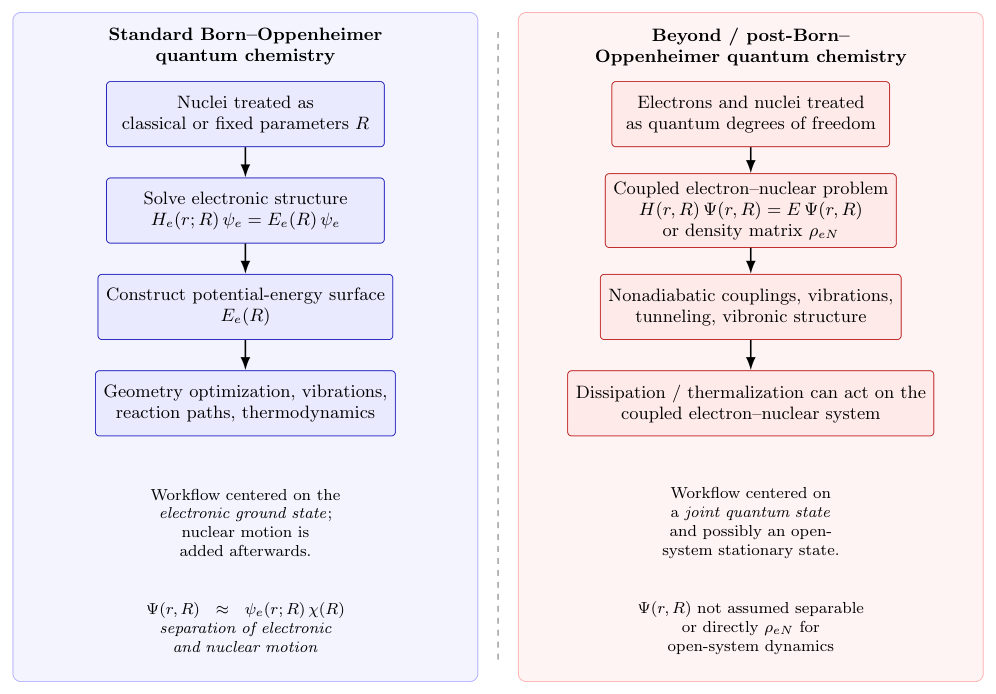
<figcaption class="paper-figure-caption"><b>Fig 2.</b> Figure 2: Conceptual comparison between standard Born–Oppenheimer quantum chemistry and beyond-/post-Born– Oppenheimer approaches. In the Born–Oppenheimer picture, one first solves an electronic structure problem for fixed nuclear coordinates and then derives nuclear dynamics from the resulting potential-energy surface. In the beyond- Born–Oppenheimer picture, electrons and nuclei are treated on a common quantum footing, allowing nonadiabatic effects, vibronic structure, tunneling, and, in principle, dissipation acting on the coupled electron–nuclear system.</figcaption>
</figure>
</div>

<p><strong>Summary.</strong> This review argues that simulating quantum chemistry must embrace open-system dynamics, moving beyond idealized unitary models to account for environmental coupling. It analyzes the theoretical challenges and computational scaling associated with incorporating dissipation into quantum algorithms. The paper concludes by proposing a practical, incremental research strategy, moving from solid-state models to molecular dynamics.</p>
<p><strong>Why it may be interesting.</strong> It directly bridges the gap between foundational quantum computation theory (open systems, dissipation) and a core area of physical chemistry, providing a roadmap for future quantum simulation efforts.</p>
<details>
<summary>Detailed structure</summary>
<p><strong>Main problem.</strong> The paper addresses the need to move quantum chemistry simulations beyond idealized, closed-system unitary dynamics to incorporate the reality of open-system physics, such as relaxation and decoherence.</p>
<p><strong>Main result.</strong> It argues that incorporating dissipation is crucial for realistic quantum chemistry but requires a fundamental overhaul of existing quantum simulation machinery, suggesting an incremental, hierarchical approach for practical implementation.</p>
<p><strong>Method.</strong> The review synthesizes theoretical proposals, comparing scaling estimates for various mapping techniques (second-quantized vs. first-quantized) and outlining practical pathways from solid-state physics to molecular dynamics.</p>
<p><strong>Model / system.</strong> The primary system is quantum chemistry, modeled by Hamiltonians that can be either closed (Born-Oppenheimer) or open (coupled to a thermal environment via Lindbladians). The scope ranges from periodic solids to small molecules.</p>
<p><strong>Key observables.</strong> Stationary thermal state, electronic ground-state energy, reaction probabilities, and transition amplitudes.</p>
<p><strong>Important parameters / regimes.</strong> System size (A), time/precision requirements, and the nature of environmental coupling (dissipation strength).</p>
<p><strong>Assumptions / limitations.</strong> The ideal, fully general quantum simulation incorporating all physics is deemed too demanding; progress must be achieved through restricted, physically motivated settings.</p>
<p><strong>Figures summary.</strong> Figure 1 contrasts closed-system vs. open-system views of molecular dynamics. Figure 2 compares scaling approaches from standard Born-Oppenheimer to beyond-B-O treatments.</p>
<p><strong>Paper structure.</strong> The review progresses by first critiquing the unitary assumption, then detailing the theoretical integration of dissipation, followed by a discussion of scaling limits, and concluding with a practical, hierarchical roadmap for future research.</p>
</details>
<details>
<summary>Abstract</summary>
<p>Quantum simulation is widely regarded as one of the most promising routes to genuine quantum advantage, yet most existing approaches to quantum chemistry are formulated in terms of closed-system, unitary dynamics and ground-state preparation within the Born--Oppenheimer approximation. In this review, we discuss a broader perspective motivated by the observation that naturally occurring quantum systems are rarely isolated and often reach physically relevant states only through relaxation, decoherence, and thermalization. We first examine what is and is not known about exponential quantum advantage in chemistry, emphasizing that coherent Hamiltonian simulation provides the clearest formal case for speed-up, while many open questions remain for realistic problems. We then discuss how dissipation might ideally be integrated into quantum chemistry on a fault-tolerant quantum computer, using recent proposals for chemically motivated dynamical simulation as a guiding vision. More generally, we highlight the practical appeal of this approach to enhancing the robustness of quantum algorithms.</p>
</details>
<p><sub><a href="#top">↑ back to top</a></sub></p>

<p><a id="paper-2605.15982"></a></p>
<h3 id="biorthogonal-dynamical-quantum-phase-transitions-in-a-non-hermitian-kitaev-chain"><a href="http://arxiv.org/abs/2605.15982v1">Biorthogonal Dynamical Quantum Phase Transitions in a Non-Hermitian Kitaev Chain</a></h3>
<p><strong>Authors:</strong> Haoran Gu, Yubo Zhao, Siyuan Cheng, Yuee Xie, Xiaosen Yang, Yuanping Chen<br>
<strong>Type:</strong> theory · <strong>Category:</strong> statistical mechanics · <strong>PDF:</strong> <a href="https://arxiv.org/pdf/2605.15982v1">https://arxiv.org/pdf/2605.15982v1</a><br>
<strong>Analysis basis:</strong> full PDF text, analyzed in chunks
<strong>Topic relevance:</strong> 🔥 <code>driven-dissipative phase transition</code> <strong>4/5</strong> · <code>methods for driven-dissipative</code> <strong>3/5</strong> · <code>non-equilibrium dynamics</code> <strong>3/5</strong> · <code>non-equilibrium universality</code> <strong>3/5</strong> · <code>Keldysh / 2PI / non-Gaussian methods</code> <strong>2/5</strong> · <code>Kondo &amp; dissipative impurity</code> <strong>1/5</strong> · <code>analog quantum simulation</code> <strong>1/5</strong> · <code>correlated / nonlocal dissipation</code> <strong>1/5</strong> · <code>entanglement &amp; information structure</code> <strong>1/5</strong></p>
<div class="figure-strip-hint">↔ Scroll figures horizontally</div>
<div class="paper-figures-scroll">
<figure class="paper-figure-card">
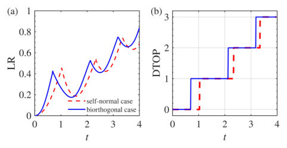
<figcaption class="paper-figure-caption"><b>Fig 1.</b> FIG. 1. (a) Nonanalytic behavior of the biorthogonal Loschmidt rate obtained from Eq. (8), clearly visible at crit- ical times. (b) Biorthogonal DTOP evaluated from Eq. (10), showing a unit jump at the critical time in agreement with the Loschmidt rate. Common parameters: t1 = 1, ∆= 0.9, γ = 0.5, µi r = 0.25, and µf r = 1.7.</figcaption>
</figure>
<figure class="paper-figure-card">
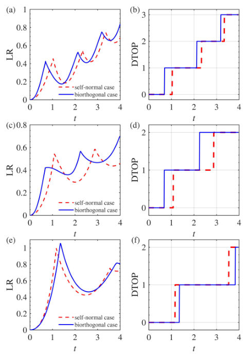
<figcaption class="paper-figure-caption"><b>Fig 2.</b> FIG. 2. DQPTs for three different quench processes (from top to bottom): a quench from the topological phase to the topologically trivial phase with (µi r, µf r) = (0.3, 1.7), a quench inside the trivial phase with (µi r, µf r) = (−0.6, 0.7), and a quench from the topologically trivial phase to the topological phase with (µi r, µf r) = (1.7, −0.3). (a), (c), and (e) show the Loschmidt rate, while (b), (d), and (f) show the corresponding DTOP. Common parameters: t1 = 1, ∆= 0.9, and γ = 0.5.</figcaption>
</figure>
<figure class="paper-figure-card">
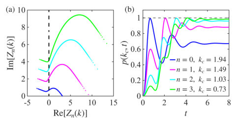
<figcaption class="paper-figure-caption"><b>Fig 3.</b> FIG. 3. (a) Dynamical Fisher zeros Zn(k) for the representa- tive quench process in Fig. 1, shown for n = 0, 1, 2, 3. (b) Corresponding transition probability between |ui kc−(t)⟩and |ui kc+⟩at the critical momentum.</figcaption>
</figure>
<figure class="paper-figure-card">
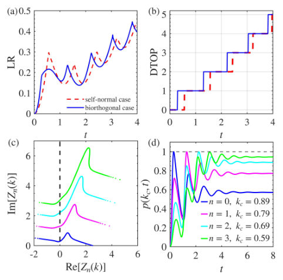
<figcaption class="paper-figure-caption"><b>Fig 4.</b> FIG. 4. (a) Nonanalytic behavior exhibiting the critical times. (b) DTOP jumps corresponding to the evolution of LR(t). (c) Curves of Zn(k) crossing the imaginary axis and display- ing DQPTs for n = 0, 1, 2, 3. (d) Corresponding transition probability between |ui kc−(t)⟩and |ui kc+⟩at the critical mo- mentum. Common parameters: t1 = 1, t2 = 0.7, ∆= 0.9, γ = 0.5, µi r = −0.5, and µf r = 2.2.</figcaption>
</figure>
<figure class="paper-figure-card">

<figcaption class="paper-figure-caption"><b>Fig 5.</b> Figure 3(b) indicates that multiple critical momenta kc can exist, each associated with a distinct critical time tc. Moreover, a characteristic pattern is observed: for t &lt; tc, p(kc, t) exhibits n local maxima and reaches 1 at the (n + 1)-th maximum, whereas for t ≫tc, it tends to a steady state. By employing a biorthogonal framework, we study DQPTs in a non-Hermitian Kitaev chain. This formula- tion applies to general non-Hermitian Hamiltonians with complex spectra, and we illustrate its implementation and physical consequences together with a comparison to the self-normal treatment.</figcaption>
</figure>
</div>

<p><strong>Summary.</strong> This work develops and applies a biorthogonal framework to study Dynamical Quantum Phase Transitions in non-Hermitian topological superconductors, using the Kitaev chain as a model. The authors demonstrate that this biorthogonal approach provides a theoretically consistent and physically robust method for identifying critical transition times, correcting discrepancies found using standard self-normal methods.</p>
<p><strong>Why it may be interesting.</strong> The rigorous development of a consistent diagnostic tool (biorthogonality) for non-equilibrium dynamics in non-Hermitian systems is highly relevant for understanding open quantum systems and driven many-body physics.</p>
<details>
<summary>Detailed structure</summary>
<p><strong>Main problem.</strong> The paper investigates Dynamical Quantum Phase Transitions (DQPTs) in non-Hermitian systems, specifically addressing the theoretical shortcomings of conventional self-normal approaches.</p>
<p><strong>Main result.</strong> The authors establish that a biorthogonal framework is essential for consistently diagnosing DQPTs, yielding critical times that differ systematically from conventional methods.</p>
<p><strong>Method.</strong> The study employs an associated-state formalism and reformulates key diagnostics like the Loschmidt rate function and the Dynamical Topological Order Parameter (DTOP) using biorthogonal inner products.</p>
<p><strong>Model / system.</strong> The primary model is the non-Hermitian Kitaev chain, used as a prototypical system for non-Hermitian topological superconductors. The analysis is performed in momentum space using a specific Hamiltonian structure.</p>
<p><strong>Key observables.</strong> Biorthogonal Loschmidt echo/rate, Dynamical Topological Order Parameter (DTOP), and Dynamical Fisher zeros ($Z_n(k)$).</p>
<p><strong>Important parameters / regimes.</strong> Critical times ($t_c$) associated with the transition, and the momentum $k$ resolved subsystems.</p>
<p><strong>Assumptions / limitations.</strong> The core assumption is that the conventional self-normal approach lacks a proper probabilistic interpretation in non-Hermitian dynamics, necessitating the biorthogonal formalism.</p>
<p><strong>Figures summary.</strong> Figures illustrate the nonanalytic behavior of the biorthogonal Loschmidt rate and DTOP at critical times, and compare the results of the biorthogonal versus self-normal schemes across multiple quench processes.</p>
<p><strong>Paper structure.</strong> The paper develops the biorthogonal framework, applies it to the Kitaev chain, compares its diagnostics (Loschmidt echo, DTOP) against conventional methods, and concludes by establishing the framework's robustness and necessity for non-Hermitian dynamics.</p>
</details>
<details>
<summary>Abstract</summary>
<p>Dynamical quantum phase transitions in non-Hermitian systems pose fundamental challenges due to the intrinsic biorthogonality of their eigenstates. In this work, we extend a biorthogonal framework to investigate dynamical quantum phase transitions in non-Hermitian topological superconductors. Taking the non-Hermitian Kitaev chain as a prototypical model, we construct an associated-state formalism and reformulate the Loschmidt rate function, dynamical topological order parameter, and dynamical Fisher zeros. Within this framework, we find that the critical times at which dynamical quantum phase transitions occur differ from those based on the conventional self-normal approaches. We further analyze momentum-resolved subsystems at critical momenta and demonstrate the robustness of the biorthogonal framework. Our work highlights the essential role of biorthogonality in nonequilibrium dynamics and establishes a consistent theoretical framework for dynamical quantum phase transitions in non-Hermitian topological superconductors.</p>
</details>
<p><sub><a href="#top">↑ back to top</a></sub></p>

<p><a id="paper-2605.16209"></a></p>
<h3 id="an-agitated-oscillator-chain"><a href="http://arxiv.org/abs/2605.16209v1">An agitated oscillator chain</a></h3>
<p><strong>Authors:</strong> Aaron Beyen, Christian Maes, Ion Santra<br>
<strong>Type:</strong> theory · <strong>Category:</strong> statistical mechanics · <strong>PDF:</strong> <a href="https://arxiv.org/pdf/2605.16209v1">https://arxiv.org/pdf/2605.16209v1</a><br>
<strong>Analysis basis:</strong> full PDF text, analyzed in chunks
<strong>Topic relevance:</strong> 🔥 <code>non-equilibrium dynamics</code> <strong>4/5</strong> · <code>Frenkel-Kontorova</code> <strong>3/5</strong> · <code>driven-dissipative phase transition</code> <strong>3/5</strong> · <code>non-equilibrium universality</code> <strong>3/5</strong> · <code>methods for driven-dissipative</code> <strong>2/5</strong> · <code>Keldysh / 2PI / non-Gaussian methods</code> <strong>1/5</strong> · <code>correlated / nonlocal dissipation</code> <strong>1/5</strong></p>
<div class="figure-strip-hint">↔ Scroll figures horizontally</div>
<div class="paper-figures-scroll">
<figure class="paper-figure-card">
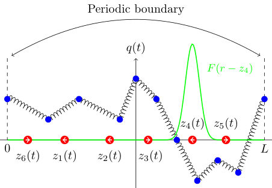
<figcaption class="paper-figure-caption"><b>Fig 1.</b> FIG. 1: A configuration of active particles (red disks) with associated spins (white arrow) on a</figcaption>
</figure>
<figure class="paper-figure-card">
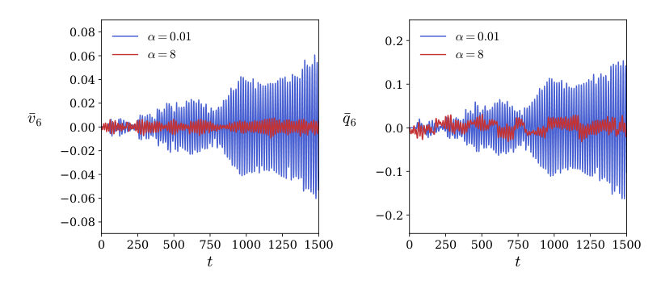
<figcaption class="paper-figure-caption"><b>Fig 2.</b> FIG. 2: Time evolution of the k = 6 Fourier mode in the transient regime. Left: velocity mode</figcaption>
</figure>
<figure class="paper-figure-card">
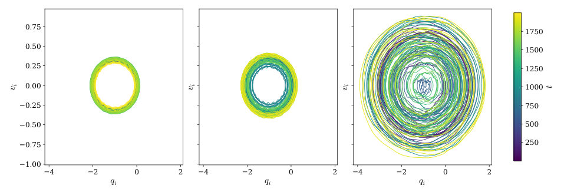
<figcaption class="paper-figure-caption"><b>Fig 3.</b> FIG. 3: Phase-space trajectories of a tagged oscillator for different values of the bath activity.</figcaption>
</figure>
<figure class="paper-figure-card">
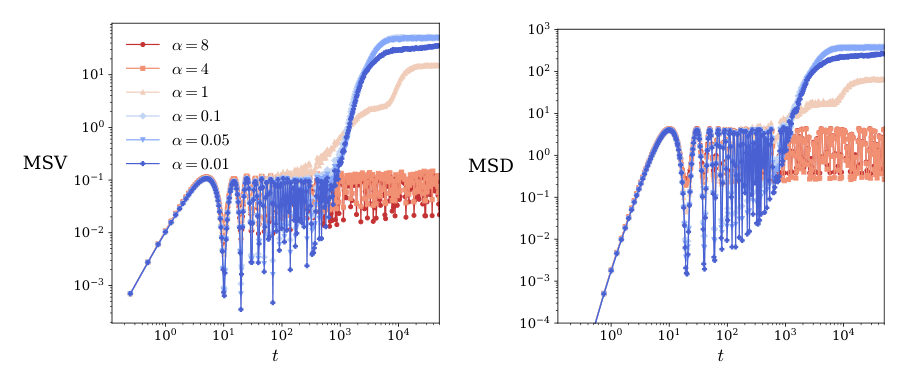
<figcaption class="paper-figure-caption"><b>Fig 4.</b> FIG. 4: Temporal evolution of the mean-squared velocity (left) and mean-squared displacement</figcaption>
</figure>
<figure class="paper-figure-card">
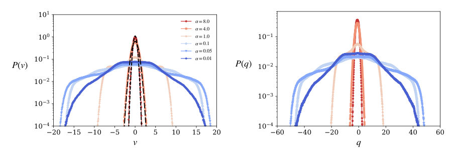
<figcaption class="paper-figure-caption"><b>Fig 5.</b> FIG. 5: Stationary distributions of a tagged oscillator. Left: velocity distribution P(vi). Right:</figcaption>
</figure>
</div>

<p><strong>Summary.</strong> This work analyzes an oscillator chain coupled to active run-and-tumble particles, deriving a reduced Langevin equation under time-scale separation. The key finding is that the active bath induces negative linear friction, leading to an instability that is ultimately arrested by nonlinear effects. This results in the chain adopting a self-sustained, non-equilibrium steady state with characteristic Rayleigh-like pulsations.</p>
<p><strong>Why it may be interesting.</strong> The emergence of self-sustained, non-equilibrium dynamics (like Rayleigh oscillators) from coupling to active matter is a key topic in non-equilibrium statistical mechanics, highly relevant to understanding active matter systems.</p>
<details>
<summary>Detailed structure</summary>
<p><strong>Main problem.</strong> The study investigates how the stationary dynamics of an oscillator chain are modified when coupled to a bath of active run-and-tumble particles.</p>
<p><strong>Main result.</strong> The coupling can transform a passive chain into a self-sustained fluctuating medium exhibiting Rayleigh-like dynamics, characterized by non-equilibrium steady states and persistent currents.</p>
<p><strong>Method.</strong> The analysis uses time-scale separation to derive a reduced Langevin equation for the chain dynamics, followed by Fourier space analysis of the resulting coupled modes.</p>
<p><strong>Model / system.</strong> The system consists of a chain of coupled harmonic oscillators interacting with a bath of run-and-tumble particles (RTPs) moving on a ring. The dynamics are modeled via a reduced Langevin equation incorporating mean forces, induced friction, and noise.</p>
<p><strong>Key observables.</strong> Mean Squared Velocity (MSV), Mean Squared Displacement (MSD), and the antisymmetric displacement-velocity cross-correlation $C_{qv}(\ell)$.</p>
<p><strong>Important parameters / regimes.</strong> Activity parameter ($\alpha$), coupling strength ($\zeta$), and the ratio of time scales ($\epsilon = \omega_{chain}L/v_0$).</p>
<p><strong>Assumptions / limitations.</strong> The primary assumption is the time-scale separation between the slow oscillator chain dynamics and the fast bath dynamics, allowing for projection operator techniques.</p>
<p><strong>Figures summary.</strong> Figures illustrate mode amplitude growth in the negative-friction regime, phase-space trajectories showing limit cycles (Rayleigh-like), and the non-equilibrium nature of spatial correlations.</p>
<p><strong>Paper structure.</strong> The paper proceeds by deriving the reduced Langevin dynamics using time-scale separation, analyzing the resulting friction and noise terms in Fourier space, and finally characterizing the non-equilibrium stationary state through correlation functions and stability analysis.</p>
</details>
<details>
<summary>Abstract</summary>
<p>We study how the stationary dynamics of an oscillator chain is modified when coupled to a bath of run-and-tumble particles. First, assuming time-scale separation, we derive the induced Langevin chain dynamics with explicit expressions for the streaming term, friction coefficient, and noise amplitude. At high persistence of the run-and-tumble particle bath, the linear friction turns negative, creating an instability. Second, we find that this anti-damping is arrested at long times due to nonlinear effects, reminiscent of a Rayleigh oscillator. We conclude that a passive harmonic chain can be transformed by its coupling to active matter into a self-sustained fluctuating medium with many-body Rayleigh-like dynamics. That transfer of activity results in pulsations of the displacements, spatial oscillations, and the emergence of persistence in velocities along the chain.</p>
</details>
<p><sub><a href="#top">↑ back to top</a></sub></p>

<p><a id="paper-2605.15985"></a></p>
<h3 id="thermodynamic-networks-harnessing-non-equilibrium-steady-states-for-computation"><a href="http://arxiv.org/abs/2605.15985v1">Thermodynamic Networks: Harnessing Non-Equilibrium Steady States for Computation</a></h3>
<p><strong>Authors:</strong> Patryk Lipka-Bartosik, Gianmichele Blasi, Javier Lalueza Puértolas, Géraldine Haack, Martí Perarnau-Llobet, Nicolas Brunner<br>
<strong>Type:</strong> theory · <strong>Category:</strong> statistical mechanics · <strong>PDF:</strong> <a href="https://arxiv.org/pdf/2605.15985v1">https://arxiv.org/pdf/2605.15985v1</a><br>
<strong>Analysis basis:</strong> full PDF text, analyzed in chunks
<strong>Topic relevance:</strong> 🔥 <code>non-equilibrium dynamics</code> <strong>4/5</strong> · <code>driven-dissipative phase transition</code> <strong>3/5</strong> · <code>methods for driven-dissipative</code> <strong>3/5</strong> · <code>non-equilibrium universality</code> <strong>3/5</strong> · <code>correlated / nonlocal dissipation</code> <strong>2/5</strong> · <code>Keldysh / 2PI / non-Gaussian methods</code> <strong>1/5</strong></p>
<div class="figure-strip-hint">↔ Scroll figures horizontally</div>
<div class="paper-figures-scroll">
<figure class="paper-figure-card">
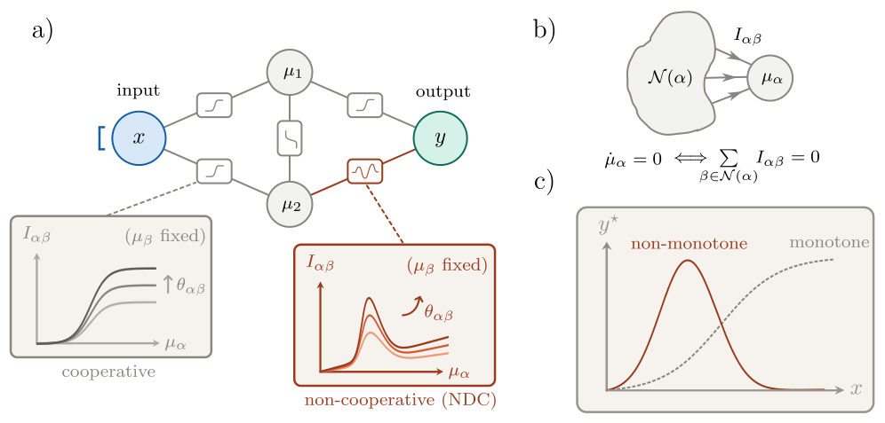
<figcaption class="paper-figure-caption"><b>Fig 1.</b> FIG. 1. Thermodynamic networks compute by equilibrating. (a) A thermodynamic network is a graph of reservoirs (nodes) coupled by transport channels (edges) that collectively redistribute a conserved charge. The conjugate potential µ serves as both the dynamical state variable at every node and the language of input and output. The input reservoir x is clamped to a prescribed potential (bracket), hidden nodes µ1 and µ2 evolve freely, and the output y is read out at steady state. Each transport channel (rectangular box) carries a current Iαβ(µα, µβ) governed by tuneable parameters θαβ. Insets show the current–potential characteristic at fixed µβ for a family of parameter values. Cooperative...</figcaption>
</figure>
<figure class="paper-figure-card">
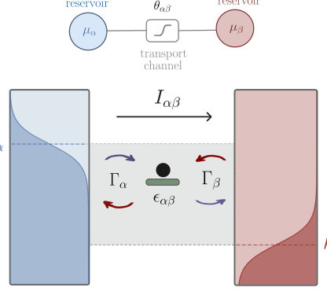
<figcaption class="paper-figure-caption"><b>Fig 2.</b> FIG. 2. Quantum-dot realisation of a thermodynamic network edge. Physical implementation of an edge (α, β) using a quantum dot. Each reservoir is an electronic lead char- acterised by a chemical potential µℓand temperature Tℓ. The shaded regions represent their Fermi–Dirac occupation. The dot hosts a single energy level ϵαβ through which electrons tunnel sequentially, with rates set by the tunnel couplings Γα and Γβ. The dot energy level further shifts with the applied bias via the electrostatic shift effect, see Eq. (17). For cer- tain choices of parameters, the energy level can be swept out of the transport window (grey shading), producing negative differential conductance—the mechanism...</figcaption>
</figure>
<figure class="paper-figure-card">
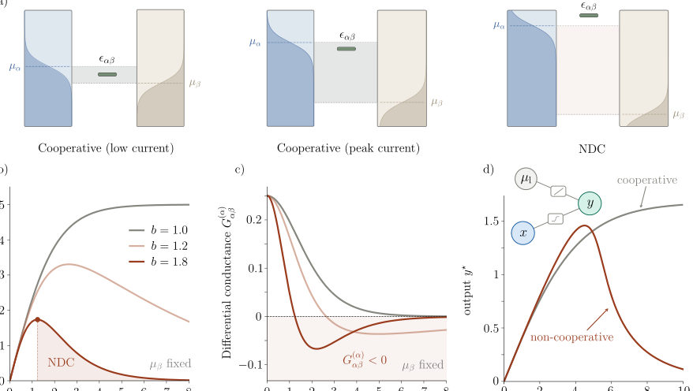
<figcaption class="paper-figure-caption"><b>Fig 3.</b> FIG. 3. Negative differential conductance in a quantum dot and its computational consequences. (a) Energy- level diagrams of a quantum dot at three operating points. At low bias µα −µβ, the dot level ϵαβ lies within the transport window between µα and µβ, and current flows freely. As the bias increases, the level is pushed above the source chemical potential, suppressing current despite the growing driving force, which is the hallmark of negative differential conductance (NDC). (b) Current–voltage characteristics for a quantum dot connected to equal temperature reservoirs Tα = Tβ with a varying electrostatic shift parameter b. For b = 1 (no NDC), the current increases monotonically with...</figcaption>
</figure>
<figure class="paper-figure-card">

<figcaption class="paper-figure-caption"><b>Fig 4.</b> FIG. 4. Quantum dot network implementing XOR. Decision surfaces of a network of quantum dots trained on the XOR task, showing the steady-state output potential y⋆</figcaption>
</figure>
<figure class="paper-figure-card">

<figcaption class="paper-figure-caption"><b>Fig 5.</b> FIG. 5. Thermodynamic networks of quantum dots applied to MNIST problem (digit classification). (a) Test accuracy of trained thermodynamic networks as a func- tion of the number of neurons in the single hidden layer (784 input nodes, nh hidden nodes, 10 output nodes). The curves correspond to three different regimes: linear, cooperative and NDC. All networks are trained on the MNIST dataset using gradient descent via implicit differentiation. We observe that NDC is a key ingredient for learning in this task, whereas linear and monotonic networks learn substantially worse. (b) Confusion matrix of the NDC-based thermodynamic network with nh = 30 hidden nodes computed on the test set with 300...</figcaption>
</figure>
</div>

<p><strong>Summary.</strong> This work introduces thermodynamic networks as a general framework for computation based on physical relaxation to non-equilibrium steady states. It rigorously proves that the ability to exhibit Negative Differential Conductance (NDC) is necessary and sufficient for these networks to achieve universal function approximation. The approach is demonstrated using quantum dot and enzymatic models, establishing a deep link between non-equilibrium physics and computational power.</p>
<p><strong>Why it may be interesting.</strong> It provides a direct physical realization of machine learning concepts (like universal approximation) using fundamental principles of non-equilibrium thermodynamics and transport physics, linking computation to dissipation.</p>
<details>
<summary>Detailed structure</summary>
<p><strong>Main problem.</strong> Developing a general framework for autonomous, physics-based computation using non-equilibrium steady states (NESS).</p>
<p><strong>Main result.</strong> The presence of Negative Differential Conductance (NDC) is the critical physical property that enables universal function approximation in these thermodynamic networks.</p>
<p><strong>Method.</strong> The computation is modeled by finding the steady-state solution ($\dot{\mu}=0$) of the network dynamics, and training is achieved using implicit differentiation techniques analogous to Deep Equilibrium Models.</p>
<p><strong>Model / system.</strong> The system is a 'thermodynamic network' modeled as a graph of mesoscopic reservoirs exchanging conserved quantities. Computation occurs when the system relaxes to a NESS, which maps an input state to a steady-state output.</p>
<p><strong>Key observables.</strong> Differential Conductance, Conductance Matrix ($G$), Steady-State Output ($\mu^\star$), and the ability to compute non-monotone functions like XOR.</p>
<p><strong>Important parameters / regimes.</strong> Negative Differential Conductance (NDC), Cooperativity, Input potentials ($x$), and system parameters ($ heta$).</p>
<p><strong>Assumptions / limitations.</strong> The process is autonomous, governed only by dissipation, and the adiabatic regime ($ au_{    ext{internal}} \ll  au_{    ext{charging}}$) is assumed for the steady-state calculation.</p>
<p><strong>Figures summary.</strong> Figures illustrate the network structure, showing how cooperative channels yield monotone responses, while NDC channels enable non-monotone maps, and demonstrate successful classification (e.g., MNIST) using NDC.</p>
<p><strong>Paper structure.</strong> The paper establishes the NESS framework, identifies NDC as the key ingredient for non-monotonicity, proves universal approximation theorems, and illustrates this concept using quantum dot and enzymatic reaction network platforms.</p>
</details>
<details>
<summary>Abstract</summary>
<p>We introduce thermodynamic networks, a general framework for autonomous, physics-based computation using non-equilibrium steady states. These networks are modeled as a collection of finite-size reservoirs that exchange conserved quantities--such as electric charge or molecular number--while relaxing to a non-equilibrium steady state, which encodes the solution of a computational problem. We identify Negative Differential Conductance (NDC) as the critical physical property governing the computational expressivity of the thermodynamic network. While networks lacking NDC are restricted to computing monotonic functions, the presence of NDC enables universal function approximation. For the training of the network, we use protocols that take advantage of the natural tendency of the system to equilibrate. We illustrate the versatility of our approach via two different platforms: quantum dot networks and enzymatic reaction networks. Both systems can be engineered to have NDC, enabling high performance in standard benchmarks, including sine function approximation and MNIST digit classification. Overall, our work establishes a rigorous link between non-equilibrium steady states and computational expressivity.</p>
</details>
<p><sub><a href="#top">↑ back to top</a></sub></p>

<p><a id="paper-2605.15730"></a></p>
<h3 id="short-time-critical-dynamics-in-the-classical-cubic-dimer-model"><a href="http://arxiv.org/abs/2605.15730v1">Short-time critical dynamics in the classical cubic dimer model</a></h3>
<p><strong>Authors:</strong> Hu-Xiao Peng, Zheng Yan, Shuai Yin<br>
<strong>Type:</strong> theory · <strong>Category:</strong> statistical mechanics · <strong>PDF:</strong> <a href="https://arxiv.org/pdf/2605.15730v1">https://arxiv.org/pdf/2605.15730v1</a><br>
<strong>Analysis basis:</strong> full PDF text, analyzed in chunks
<strong>Topic relevance:</strong> 🔥 <code>non-equilibrium universality</code> <strong>4/5</strong> · <code>driven-dissipative phase transition</code> <strong>3/5</strong> · <code>non-equilibrium dynamics</code> <strong>3/5</strong> · <code>Keldysh / 2PI / non-Gaussian methods</code> <strong>1/5</strong> · <code>analog quantum simulation</code> <strong>1/5</strong> · <code>entanglement &amp; information structure</code> <strong>1/5</strong> · <code>methods for driven-dissipative</code> <strong>1/5</strong></p>
<div class="figure-strip-hint">↔ Scroll figures horizontally</div>
<div class="paper-figures-scroll">
<figure class="paper-figure-card">

<figcaption class="paper-figure-caption"><b>Fig 1.</b> FIG. 1. Two types of interactions and two types of initial states in the dimer model. (a) Two parallel dimers on the plane contribute energy v2. (b) Four parallel dimers on a unit cube contribute energy v4. In this study, we fixed v2 = −1 and v4 = 10. (c) The disordered initial state with Nx = 0, typical of a Coulomb phase. (d) The completely ordered initial state with Nx = 1, representing a columnar phase.</figcaption>
</figure>
<figure class="paper-figure-card">

<figcaption class="paper-figure-caption"><b>Fig 2.</b> FIG. 3. Short-time dynamics of the ratio N 2 d/N 2 o at the crit- ical point Tc = 0.672 for system size L = 100. The dotted curve represents the Monte Carlo results, while the solid line corresponds to the fitted curve with a power function. Log- log coordinates are used.</figcaption>
</figure>
<figure class="paper-figure-card">

<figcaption class="paper-figure-caption"><b>Fig 3.</b> FIG. 4. Short-time dynamics of the classical dimer model quenched from a disordered state to the critical point for various system sizes. (a) N 2 d plotted versus time in log-log scale for system size L = 100 . The symbols represent the Monte Carlo results, while the solid line corresponds to the fitted result. The inset shows a log-log plot of N 2 d as a function of system size L = 40, 60, 80, 100 at a fixed time t = 104, where the solid line represents a power-law fit yielding N 2 d ∝L−3.12, consistent with the expected L−d scaling with d = 3. (b) Time dependence of N 2 d for L = 40 to 100. (c) After rescaling N 2 d and t as N 2 dL2β/νz</figcaption>
</figure>
<figure class="paper-figure-card">

<figcaption class="paper-figure-caption"><b>Fig 4.</b> FIG. 5. Short-time dynamics of the classical dimer model quenched from an ordered state to the critical point for various system sizes. (a) N 2 o plotted versus time in log-log scale for system size L = 100 . (b) Time dependence of N 2 o for L = 40 to 100. (c) After rescaling N 2 o and t as N 2 o L2β/νz and tL−z, all curves collapse well. Log-log coordinates are used.</figcaption>
</figure>
<figure class="paper-figure-card">

<figcaption class="paper-figure-caption"><b>Fig 5.</b> FIG. 6. The time correlation of the total order parameter Q starting from a disordered state at the critical point. (a) Time dependence of Q for system size L = 80. Since the statistical fluctuations for L = 100 are too large to allow for a reliable fit, we therefore use L = 80 in our analysis. (b) After rescaling Q and t as QL−θz and tL−z, all curves collapse well. Log-log coordinates are used.</figcaption>
</figure>
</div>

<p><strong>Summary.</strong> This work characterizes the non-equilibrium short-time critical dynamics of the 3D classical dimer model. Using Monte Carlo simulations, the authors determine key critical exponents, notably finding an unusual negative critical initial slip exponent. This negative exponent is linked theoretically to the combined effects of emergent SO(5) symmetry and a local U(1) gauge constraint.</p>
<p><strong>Why it may be interesting.</strong> The study provides a detailed look at non-equilibrium critical dynamics, which shares conceptual links with how quantum systems evolve away from equilibrium, particularly in understanding universal scaling laws beyond simple mean-field descriptions.</p>
<details>
<summary>Detailed structure</summary>
<p><strong>Main problem.</strong> Investigating the nonequilibrium critical dynamics, particularly in the short-time regime, of the classical cubic dimer model.</p>
<p><strong>Main result.</strong> The authors determined the critical temperature ($T_c = 0.672(1)$), dynamic exponent ($z = 1.92(1)$), and found an anomalous negative critical initial slip exponent ($ heta = -1.052(5)$).</p>
<p><strong>Method.</strong> Large-scale Monte Carlo simulations were used to analyze the short-time scaling behavior of the order parameter and its time correlation function.</p>
<p><strong>Model / system.</strong> The system is the classical dimer model on a cubic lattice, which exhibits a continuous phase transition beyond the conventional Landau-Ginzburg-Wilson paradigm.</p>
<p><strong>Key observables.</strong> Order parameter squared ($\langle N^2 
angle$), time-correlation function ($Q(t)$), critical exponents ($eta/
u$, $z$, $   heta$).</p>
<p><strong>Important parameters / regimes.</strong> The study focuses on the short-time regime, quenching from both ordered and disordered initial states.</p>
<p><strong>Assumptions / limitations.</strong> The analysis relies on theoretical scaling relations for short-time dynamics, and the negative $ heta$ is attributed to emergent SO(5) symmetry and a local U(1) gauge constraint.</p>
<p><strong>Figures summary.</strong> Figures illustrate the dependence of the order parameter on time and system size, showing data collapse when rescaled using the derived exponents.</p>
<p><strong>Paper structure.</strong> The paper details the model and methods, reviews the theory of short-time scaling, presents the numerical results for the exponents, and concludes by interpreting the physical meaning of the anomalous negative exponent $   heta$.</p>
</details>
<details>
<summary>Abstract</summary>
<p>The classical dimer model on the cubic lattice hosts a columnar ordered phase and a disordered Coulomb phase, separated by a continuous phase transition that lies beyond the conventional Landau-Ginzburg-Wilson paradigm. While its equilibrium critical properties have been extensively studied, the nonequilibrium critical dynamics of this model--particularly in the short-time regime--remains largely unexplored. In this work, we investigate the short-time critical dynamics near the transition using large-scale Monte Carlo simulations. By quenching the system from both ordered and disordered initial states with vanishing initial correlation length, we analyze the scaling behaviors of the order parameter and its time correlation function in the short-time stage. From these scaling behaviors, we accurately determine the critical temperature $T_c = 0.672(1)$ and the static critical exponent $β/ν= 0.581(5)$ according to the scaling theory of the short-time dynamics. These results are in excellent agreement with previous equilibrium studies. Moreover, we extract the dynamic critical exponent $z = 1.92(1)$ and, notably, find a negative critical initial slip exponent $θ= -1.052(5)$. This unusual negative value contrasts sharply with the positive $θ$ typically observed in conventional critical dynamics. We attribute this anomalous behavior to the combined effects of the emergent SO(5) symmetry at criticality and the local U(1) gauge constraint (Gauss law), which enforces a conserved diffusive dynamics and enhances fluctuations in the short-time regime. Our results provide the first comprehensive characterization of nonequilibrium short-time criticality in the three-dimensional dimer model, shedding new light on the universal dynamical features of phase transitions beyond the Landau-Ginzburg-Wilson framework.</p>
</details>
<p><sub><a href="#top">↑ back to top</a></sub></p>

<p><a id="paper-2605.16093"></a></p>
<h3 id="unbounded-communication-power-of-a-qubit"><a href="http://arxiv.org/abs/2605.16093v1">Unbounded Communication Power of a Qubit</a></h3>
<p><strong>Authors:</strong> Souradeep Sasmal, Som Kanjilal, Debarshi Das<br>
<strong>Type:</strong> theory · <strong>Category:</strong> quantum information and computing · <strong>PDF:</strong> <a href="https://arxiv.org/pdf/2605.16093v1">https://arxiv.org/pdf/2605.16093v1</a><br>
<strong>Analysis basis:</strong> full PDF text, analyzed in chunks
<strong>Topic relevance:</strong> 🔥 <code>quantum measurements</code> <strong>4/5</strong> · <code>measurement-induced transitions</code> <strong>3/5</strong> · <code>entanglement &amp; information structure</code> <strong>2/5</strong> · <code>methods for driven-dissipative</code> <strong>1/5</strong> · <code>non-equilibrium dynamics</code> <strong>1/5</strong></p>
<div class="figure-strip-hint">↔ Scroll figures horizontally</div>
<div class="paper-figures-scroll">
<figure class="paper-figure-card">

<figcaption class="paper-figure-caption"><b>Fig 1.</b> FIG. 1: Alice’s preparations are sequentially passed from one Bob to the next, each of whom performs one of the two measurements aiming to independently reveal quantum advantage in the 2→1 RAC.</figcaption>
</figure>
<figure class="paper-figure-card">

<figcaption class="paper-figure-caption"><b>Fig 2.</b> FIG. 2: Comparison of the symmetric and asymmetric thresholds of the unsharpness parameter as functions of</figcaption>
</figure>
<figure class="paper-figure-card">

<figcaption class="paper-figure-caption"><b>Fig 3.</b> FIG. 3: Comparison of constraints on preparation distinguishabilities (∆1, ∆2) in the 2→1 RAC. The set achievable with any classical/preparation-noncontextual models are restricted to the simplex ∆1 + ∆2 ≤1, whereas the set of quantum-achievable</figcaption>
</figure>
<figure class="paper-figure-card">

<figcaption class="paper-figure-caption"><b>Fig 4.</b> FIG. 4: Regions of the unsharpness parameter yielding a quantum advantage in the 2 →1 RAC as functions of the preparation distinguishabilities ∆1 and ∆2, subject to the constraint ∆2 1 + ∆2 2 ≤1. (a) Symmetric setting: the coloured region represents λ(s) &gt; 1/(∆1 + ∆2) that enables quantum advantage. The minimal threshold min(λ(s) c ) = 1/ √</figcaption>
</figure>
<figure class="paper-figure-card">

<figcaption class="paper-figure-caption"><b>Fig 5.</b> FIG. 5: Bloch sphere representation of the preparation states and measurement directions before and after the action of the non-selective measurement channel. The initial states ρx1x2 and the transformed states Φ(ρx1x2) are shown as coloured dotted vectors, while the measurement observables B1 and B2 are indicated by solid arrows along the X- and Z-axes, respectively. The channel induces an anisotropic contraction of the Bloch vectors without altering their directions, thereby preserving the optimal (Helstrom) measurement basis while reducing the distinguishability.</figcaption>
</figure>
</div>

<p><strong>Summary.</strong> This theoretical paper demonstrates that the quantum advantage inherent in single-qubit information processing can be sustained indefinitely across multiple sequential decoding steps. By carefully balancing the sender's preparation distinguishability against the receiver's measurement incompatibility, the authors show that information is not entirely exhausted, a stronger feature than previously understood.</p>
<p><strong>Why it may be interesting.</strong> This work extends fundamental concepts of quantum information theory by showing that quantum advantages are not necessarily transient, suggesting new ways to model information persistence in open quantum systems.</p>
<details>
<summary>Detailed structure</summary>
<p><strong>Main problem.</strong> The paper investigates how long the quantum advantage in information processing, initially demonstrated by a single qubit in a Random Access Code (RAC), can be maintained across an arbitrarily large number of sequential decoding measurements.</p>
<p><strong>Main result.</strong> By utilizing preparation distinguishability as a sender resource and measurement incompatibility as a receiver resource, the authors prove that an arbitrarily long sequence of independent receivers can each extract information from the qubit while retaining a quantum advantage.</p>
<p><strong>Method.</strong> The analysis involves deriving recursive relations for the distinguishabilities ($\Delta^{(k)}_1, \Delta^{(k)}_2$) under sequential, unsharp measurements, relating the problem to constrained binary discrimination tasks.</p>
<p><strong>Model / system.</strong> The system is a single qubit undergoing sequential $2 	o 1$ Random Access Code (RAC) decoding. The protocol uses unsharp measurements (POVMs) rather than ideal projective measurements to mitigate information loss.</p>
<p><strong>Key observables.</strong> Preparation distinguishability ($\Delta$), average quantum success probability ($    ext{P}_{    ext{avg}}$), and the sequence of measurement parameters (${\lambda_k}$).</p>
<p><strong>Important parameters / regimes.</strong> The initial preparation parameters $(\Delta_1^{(1)}, \Delta_2^{(1)})$ and the sequence of measurement unsharpness parameters $\{\lambda_k\}$ are crucial.</p>
<p><strong>Assumptions / limitations.</strong> The analysis assumes the use of unsharp (non-projective) measurements and relies on relating the RAC task to preparation discrimination bounds ($\Delta_1^2 + \Delta_2^2 \le 1$).</p>
<p><strong>Figures summary.</strong> Figures illustrate the sequential passing of the qubit state through multiple receivers and compare the quantum bound ($\Delta_1^2 + \Delta_2^2 \le 1$) against classical bounds ($\Delta_1 + \Delta_2 \le 1$).</p>
<p><strong>Paper structure.</strong> The paper builds from analyzing the single-step quantum advantage condition, deriving bounds on distinguishabilities, and culminates in proving the feasibility of an infinite sequence of measurements by constructing a suitable sequence of measurement parameters $\{\lambda_k\}$ that maintains the quantum advantage.</p>
</details>
<details>
<summary>Abstract</summary>
<p>Quantum mechanics enables information-processing advantages even at the level of a single qubit. A paradigmatic example is the 2$\to$1 random access code (RAC), where a qubit outperforms a classical bit in retrieving encoded information. In the standard form, however, this quantum advantage is restricted to a single receiver, since decoding measurements inevitably destroy the encoded information. Contrary to this, we address how long the information encoded in a single qubit remains accessible even after multiple decoding, each with a quantum advantage. Introducing preparation distinguishability as an operational resource associated with the sender, we show that its interplay with measurement incompatibility on the receiver's side can mitigate measurement-induced disturbance, thereby enabling an arbitrarily long sequence of receivers to each retain a quantum advantage. Our results show that, even under repeated measurements, the information encoded in a qubit need not be entirely exhausted, revealing a stronger communication feature than previously recognised.</p>
</details>
<p><sub><a href="#top">↑ back to top</a></sub></p>

<p><a id="paper-2605.15841"></a></p>
<h3 id="critical-quench-dynamics-of-wegners-math100math-gauge-model-a-geometric-perspective"><a href="http://arxiv.org/abs/2605.15841v1">Critical quench dynamics of Wegner's $\mathbb{Z}_2$ gauge model: a geometric perspective</a></h3>
<p><strong>Authors:</strong> Ramgopal Agrawal, Leticia F. Cugliandolo, Marco Picco<br>
<strong>Type:</strong> theory · <strong>Category:</strong> statistical mechanics · <strong>PDF:</strong> <a href="https://arxiv.org/pdf/2605.15841v1">https://arxiv.org/pdf/2605.15841v1</a><br>
<strong>Analysis basis:</strong> full PDF text, analyzed in chunks
<strong>Topic relevance:</strong> 🔥 <code>non-equilibrium dynamics</code> <strong>4/5</strong> · 🔥 <code>non-equilibrium universality</code> <strong>4/5</strong> · <code>analog quantum simulation</code> <strong>1/5</strong> · <code>driven-dissipative phase transition</code> <strong>1/5</strong></p>
<div class="figure-strip-hint">↔ Scroll figures horizontally</div>
<div class="paper-figures-scroll">
<figure class="paper-figure-card">

<figcaption class="paper-figure-caption"><b>Fig 1.</b> FIG. 1. Schematic of different geometrically defined objects in Wegner’s three-dimensional gauge</figcaption>
</figure>
<figure class="paper-figure-card">

<figcaption class="paper-figure-caption"><b>Fig 2.</b> FIG. 2. (a) Plot of the scaled variable [e(t, L)−e0]L∆ϵ against time t on a log-log scale for different</figcaption>
</figure>
<figure class="paper-figure-card">

<figcaption class="paper-figure-caption"><b>Fig 3.</b> FIG. 3. Percolation strength P(t) vs. time t on a log-log scale for (a) FK clusters, (b) line loops</figcaption>
</figure>
<figure class="paper-figure-card">

<figcaption class="paper-figure-caption"><b>Fig 4.</b> FIG. 4. Scaled percolation strength Lβp/νpP(t) vs. scaled time t/Lzp on a log-log scale for (a) FK</figcaption>
</figure>
<figure class="paper-figure-card">

<figcaption class="paper-figure-caption"><b>Fig 5.</b> FIG. 5. Relative variance Rm(t) vs. time t on a log-log scale for (a) FK clusters, and (b) line loops,</figcaption>
</figure>
</div>

<p><strong>Summary.</strong> This work analyzes the non-equilibrium dynamics of the $\mathbb{Z}_2$ gauge model by tracking the relaxation of geometrically defined structures like FK clusters and line loops. Using finite-size scaling, the authors determine a universal dynamical exponent $z_p \simeq 2.6$ that governs the approach to criticality. This confirms that geometric measures are highly effective tools for characterizing critical dynamics in systems with global order parameters.</p>
<p><strong>Why it may be interesting.</strong> The finding that geometrical observables yield a dynamical exponent consistent with the thermal critical exponent, despite the absence of local order parameters, provides a powerful, non-standard diagnostic tool for studying critical dynamics in gauge theories.</p>
<details>
<summary>Detailed structure</summary>
<p><strong>Main problem.</strong> The paper investigates the critical quench dynamics of Wegner's $\mathbb{Z}_2$ gauge model, focusing on how geometric observables relax towards equilibrium after a sudden change in temperature.</p>
<p><strong>Main result.</strong> The critical relaxation of percolation observables is governed by a dynamical exponent $z_p \simeq 2.6$, which is robust across different quench protocols and matches the energy density exponent $z_c$.</p>
<p><strong>Method.</strong> The study employs time-dependent finite-size scaling analysis and analyzes the scaling of cluster size distributions $N(s, t)$ for various geometric objects.</p>
<p><strong>Model / system.</strong> The system is Wegner's $\mathbb{Z}_2$ gauge model on a 3D cubic lattice, which exhibits a topological confinement-deconfinement phase transition. Dynamics are studied by quenching from high-temperature or zero-temperature states to the critical point.</p>
<p><strong>Key observables.</strong> Percolation order parameter ($P(t)$), energy density ($e(t, L)$), and the size distribution of clusters $N(s, t)$ for FK clusters and line loops.</p>
<p><strong>Important parameters / regimes.</strong> Dynamical exponents ($z_p, z_c$), critical exponents ($eta_p, 
u_p$), and the lattice size $L$.</p>
<p><strong>Assumptions / limitations.</strong> The analysis relies on dynamic scaling hypotheses, assuming that observables can be collapsed onto universal scaling functions dependent on a characteristic lengthscale $\xi(t) \sim t^{1/z}$.</p>
<p><strong>Figures summary.</strong> Figures illustrate the collapse of scaled energy density and percolation observables onto universal scaling functions, confirming the predicted power-law decay of cluster size distributions $N(s, t) \propto s^{-\tau_p}$ at late times.</p>
<p><strong>Paper structure.</strong> The paper progresses by first establishing the geometric nature of the model's critical behavior, then applying finite-size scaling to measure the dynamical exponents ($z_p$ vs $z_c$), and finally analyzing the size distribution $N(s, t)$ to confirm dynamical scaling across different cluster types.</p>
</details>
<details>
<summary>Abstract</summary>
<p>Wegner's $\mathbb{Z}_2$ gauge model is the earliest formulation of pure lattice gauge theory and predicts the topological nature of the confinement-deconfinement transition. In three dimensions ($D=3$), the equilibrium critical behavior of the model is understood in terms of geometrically defined objects, namely loop excitations and Fortuin-Kasteleyn (FK) clusters. This work investigates the critical quench dynamics of this model from a geometric perspective, following quenches from both a high-temperature percolation phase and the zero-temperature ground state. Using time-dependent finite-size scaling analysis, we find that the critical non-equilibrium relaxation of the percolation order parameter is governed by a dynamical exponent $z_{\rm p} \simeq 2.6$, consistent with that associated with the energy density, $z_{\rm c}$. Importantly, the value of $z_{\rm p}$ is robust with respect to the initial quench condition and the choice of geometrical objects. Furthermore, we provide a detailed characterization of the kinetics of different geometrical objects during the evolution from the percolation phase. Notably, we observe that the quench dynamics obeys dynamic scaling in terms of a growing lengthscale, $ξ_{\rm p}(t) \sim t^{1/z_{\rm p}}$, despite the absence of a local order parameter.</p>
</details>
<p><sub><a href="#top">↑ back to top</a></sub></p>

<p><a id="paper-2605.16135"></a></p>
<h3 id="sub-picosecond-inter-core-skew-characterization-in-multicore-fibers-via-hong-ou-mandel-interference"><a href="http://arxiv.org/abs/2605.16135v1">Sub-picosecond inter-core skew characterization in multicore fibers via Hong--Ou--Mandel interference</a></h3>
<p><strong>Authors:</strong> L. Lira Tacca, L. Marques Fagundes, M. Morales Lillo, M. Navarro, I. Machuca, S. Gómez, G. H. dos Santos, J. Cariñe, G. Saavedra, E. S. Gómez, G. Lima, S. P. Walborn<br>
<strong>Type:</strong> experiment · <strong>Category:</strong> quantum information and computing · <strong>PDF:</strong> <a href="https://arxiv.org/pdf/2605.16135v1">https://arxiv.org/pdf/2605.16135v1</a><br>
<strong>Analysis basis:</strong> full PDF text, analyzed in chunks
<strong>Topic relevance:</strong> 🔥 <code>quantum optics experiment</code> <strong>4/5</strong> · <code>interference shaping light</code> <strong>3/5</strong> · <code>quantum measurements</code> <strong>2/5</strong> · <code>QC/QI experiment</code> <strong>1/5</strong></p>
<div class="figure-strip-hint">↔ Scroll figures horizontally</div>
<div class="paper-figures-scroll">
<figure class="paper-figure-card">

<figcaption class="paper-figure-caption"><b>Fig 1.</b> Fig. 1. Illustration of ICS accumulation in a MCF. Identical pulses propagate (here from left to right) through different cores of the MCF. Because both pulses have the same frequency spectrum, any accumulated differential delay arises solely from core-dependent group velocity variations.</figcaption>
</figure>
<figure class="paper-figure-card">

<figcaption class="paper-figure-caption"><b>Fig 2.</b> Fig. 2. a) Experimental setup for HOM interference using SPDC source. The photons are coupled into SMFs, separated by a variable delay 𝜏, and injected into the four-core MCF via a FAN-IN. Coincidence counts are registered by SNSPDs and an FPGA. b) Experimental setup for HOM interference using a weak laser source. Additional optical delay lines were added. See text for additional details.</figcaption>
</figure>
<figure class="paper-figure-card">

<figcaption class="paper-figure-caption"><b>Fig 3.</b> Fig. 3. HOM interference data. (a) Normalised coincidence counts for all six output pairs as a function of relative delay for a 12.7 m MCF, input combination 𝑎3,𝑎4, using the SPDC source. Solid lines are Gaussian fits. Statistical error bars are smaller than the data points and not visible at this scale. Coincidence curves show bunching dips (AC, AD, BC, BD) and anti-bunching peaks (AB, CD) as predicted by the 4 × 4 Hadamard transformation. Fit parameters and visibilities are listed in Table 1. (b) Coincidence rate as a function of relative delay for the 1300 m installed fiber, input combination 𝑎3,𝑎4 for a single pair of outputs, using the bimodal pulsed laser source. The modulated...</figcaption>
</figure>
<figure class="paper-figure-card">

<figcaption class="paper-figure-caption"><b>Fig 4.</b> Fig. 4. Scaling of the ICSRMS as a function of fiber length 𝐿in log-log scale for all measured lengths 𝐿. Experimental measurements (markers with error bars) are fitted using Eq. (4) (dot-dashed pink line) and a weighted power-law model ICS ∝𝐿𝛼</figcaption>
</figure>
</div>

<p><strong>Summary.</strong> This paper presents a novel, high-precision method to measure inter-core skew (ICS) in multicore fibers using two-photon Hong-Ou-Mandel (HOM) interference. By achieving sub-picosecond resolution, the authors validated the expected random-walk scaling of ICS over long distances. This technique establishes a practical platform for ensuring timing uniformity in MCFs for both classical and quantum space-division multiplexing applications.</p>
<p><strong>Why it may be interesting.</strong> This work provides a crucial, high-precision diagnostic tool for characterizing timing uniformity in optical fibers, which is essential for scaling quantum communication networks that rely on precise temporal synchronization.</p>
<details>
<summary>Detailed structure</summary>
<p><strong>Main problem.</strong> The paper addresses the critical need to accurately characterize Inter-core Skew (ICS), which is the differential group delay between cores in Multicore Fibers (MCFs), for use in quantum photonic networks.</p>
<p><strong>Main result.</strong> The authors achieved a high-precision measurement of ICS with a demonstrated accuracy of $\pm 0.11$ ps, validating the stochastic random-walk scaling of this delay over long fiber lengths.</p>
<p><strong>Method.</strong> The measurement relies on two-photon Hong-Ou-Mandel (HOM) interference using either Spontaneous Parametric Down-Conversion (SPDC) or pulsed lasers to probe the differential group delay.</p>
<p><strong>Model / system.</strong> The physical system is a multicore fiber (MCF), and the measurement utilizes HOM interference in a multiport beam splitter. The ICS is modeled as a zero-mean random walk, leading to an RMS growth $\sigma_{	au}(L) \propto \sqrt{L}$.</p>
<p><strong>Key observables.</strong> Inter-core Skew ($ au_{jk}$), HOM interference dip/peak center positions, and the Root Mean Square (RMS) ICS scaling $\sigma_{	au}(L)$.</p>
<p><strong>Important parameters / regimes.</strong> Measurement precision of $\pm 0.11$ ps; scaling coefficient $\kappa = 48.7 \pm 2.5 	ext{ ps}/\sqrt{	ext{km}}$; length range from $7.7 	ext{ m}$ to $1300 	ext{ m}$.</p>
<p><strong>Assumptions / limitations.</strong> The HOM dip/peak shift is directly proportional to the differential group delay, and the measurement is limited by the delay-stage positioning uncertainty.</p>
<p><strong>Figures summary.</strong> Figures illustrate the HOM interference data, showing the characteristic bunching dips and anti-bunching peaks for different fiber lengths and sources (SPDC vs. pulsed laser).</p>
<p><strong>Paper structure.</strong> The paper introduces the problem of ICS characterization, details the HOM interferometric method using both SPDC and pulsed lasers, presents the extraction of ICS from interference features, and finally validates the stochastic random-walk scaling over a wide length range.</p>
</details>
<details>
<summary>Abstract</summary>
<p>Inter-core skew (ICS), the differential group delay between cores of a multicore fiber (MCF), is a critical parameter for both classical space-division multiplexed communications and quantum photonic networks. We present a high-precision measurement of ICS in a commercially available four-core fiber using two-photon Hong--Ou--Mandel (HOM) interference in a fiber-integrated $4\times4$ multiport beam splitter. By extracting the center position of HOM interference dips and peaks across all twelve core-pair combinations, we obtain individual ICS values with a demonstrated precision of $\pm0.11\,$ps, limited by the delay-stage positioning uncertainty. The root-mean-square ICS grows as $σ_τ(L) = κ\sqrt{L}+c$ with $κ= 48.7 \pm 2.5\,\mathrm{ps}/\!\sqrt{\mathrm{km}}$ and $c = 9.76 \pm 1.2\,$ps, over fiber lengths from $7.7\,$m to $1300\,$m. This first direct validation of the stochastic random-walk scaling across a length range spanning laboratory to field-deployed scales was made possible by HOM's immunity to first-order path fluctuations, which renders classical interferometric methods impractical for long installed fibers. The demonstrated $\pm0.11\,$ps precision represents a $\sim\!180$-fold improvement over correlation optical time-domain reflectometry (C-OTDR), the standard method for long-fiber ICS characterization. Fisher information analysis establishes a fundamental Cramér--Rao precision limit in the femtosecond range, indicating further improvement is achievable with better delay control. These results establish a practical platform for characterising timing uniformity in MCF-based networks for both quantum and classical space-division multiplexed applications.</p>
</details>
<p><sub><a href="#top">↑ back to top</a></sub></p>

<p><a id="paper-2605.15274"></a></p>
<h3 id="unveiling-magnetic-frustration-via-the-elastocaloric-effect"><a href="http://arxiv.org/abs/2605.15274v1">Unveiling Magnetic Frustration via the Elastocaloric Effect</a></h3>
<p><strong>Authors:</strong> Eric C. Andrade, Pedro M. Cônsoli, Matthias Vojta<br>
<strong>Type:</strong> theory · <strong>Category:</strong> statistical mechanics · <strong>PDF:</strong> <a href="https://arxiv.org/pdf/2605.15274v1">https://arxiv.org/pdf/2605.15274v1</a><br>
<strong>Analysis basis:</strong> full PDF text, analyzed in chunks
<strong>Topic relevance:</strong> 🔥 <code>analog quantum simulation</code> <strong>4/5</strong> · <code>exotic spin models in light-matter</code> <strong>3/5</strong> · <code>entanglement &amp; information structure</code> <strong>1/5</strong></p>
<div class="figure-strip-hint">↔ Scroll figures horizontally</div>
<div class="paper-figures-scroll">
<figure class="paper-figure-card">

<figcaption class="paper-figure-caption"><b>Fig 1.</b> Figure 1. (a) Spatially anisotropic triangular lattice, with exchange coupling J along two directions (full lines) and J′</figcaption>
</figure>
<figure class="paper-figure-card">

<figcaption class="paper-figure-caption"><b>Fig 2.</b> Figure 2. Elastocaloric effect η for the anisotropic triangular- lattice Ising model as a function of temperature T. We employ the parametrization for the exchange constant as in Eq. (4). (a) η as a function of T for α = 0.5 and several values of the strain ϵ. (b) η as a function of T for |ϵ| = 0.05 and several values of α. The full (dashed) curves correspond to ϵ &gt; (&lt;)0.</figcaption>
</figure>
<figure class="paper-figure-card">

<figcaption class="paper-figure-caption"><b>Fig 3.</b> Figure 4. Elastocaloric effect η for the anisotropic triangular- lattice Ising model as a function of temperature T and uniax- ial strain ϵ, computed with α = 0.5. The color code indicates the value of η. We impose cutoffs η = ±20J0 for the sake of presentation. The inset shows cuts η(ϵ) at low T, illustrating the non-commuting limits. The points represent the exact computation of η, while the lines depict the low-ϵ expansion around the isotropic point, as discussed in the text.</figcaption>
</figure>
<figure class="paper-figure-card">

<figcaption class="paper-figure-caption"><b>Fig 4.</b> Figure 3. Strain dependence of (a) specific heat c and (b) entropy per site s at low temperatures T for the anisotropic triangular-lattice Ising model, computed with α = 0.5. The singular behavior at finite positive ϵ arises from the thermal phase transition. The color coding is the same for both fig- ures.</figcaption>
</figure>
<figure class="paper-figure-card">

<figcaption class="paper-figure-caption"><b>Fig 5.</b> Figure 5. Thermodynamic observables computed by ED of the spin-1/2 Heisenberg model on the anisotropic triangular lattice. The left and right columns show data for anisotropy parameters α = 0.5 and 1.0, respectively. (a,b) Entropy per site, s, as a function of temperature T and uniaxial strain ϵ. The white curves correspond to s = 0.03, 0.1, 0.2, . . . , 0.6. (c,d) Gr¨uneisen ratio η, showing signatures of two quantum phase transitions at low T and a single characteristic sign change for T/J0 ≳0.5. The data for T/J0 ≤0.05 are omitted due to finite-size effects.</figcaption>
</figure>
</div>

<p><strong>Summary.</strong> This paper explores how uniaxial strain affects the thermodynamics of frustrated magnets using the elastocaloric effect ($\eta$). By analyzing Ising and Heisenberg models on triangular and kagome lattices, the authors show that the divergence of $\eta$ at low temperatures provides a universal signature for extensive ground-state entropy. This work offers a powerful theoretical tool to probe magnetic frustration in quantum materials.</p>
<p><strong>Why it may be interesting.</strong> The connection between macroscopic thermodynamic responses (like the elastocaloric effect) and microscopic quantum properties (like ground-state degeneracy) is highly relevant for understanding quantum phase transitions in condensed matter systems.</p>
<details>
<summary>Detailed structure</summary>
<p><strong>Main problem.</strong> The study investigates the thermodynamic response of frustrated magnets to uniaxial strain to reveal the underlying physics of magnetic frustration.</p>
<p><strong>Main result.</strong> For Ising models, the elastic Grüneisen ratio ($\eta$) diverges arbitrarily at low temperatures near maximal frustration, serving as a universal hallmark of extensive ground-state entropy.</p>
<p><strong>Method.</strong> The authors calculate the entropy ($s$) and subsequently the elastic Grüneisen ratio ($\eta$) using theoretical models and analytical expansions.</p>
<p><strong>Model / system.</strong> The work analyzes Ising and Heisenberg models on spatially anisotropic triangular and kagome lattices. The Hamiltonian is modified by uniaxial strain ($\epsilon$), which linearly alters the exchange couplings ($J$ and $J'$).</p>
<p><strong>Key observables.</strong> Elastic Grüneisen ratio ($\eta$), entropy ($s$), and specific heat ($c$).</p>
<p><strong>Important parameters / regimes.</strong> Temperature ($T$), uniaxial strain ($\epsilon$), and the ratio of exchange couplings ($J'/J$).</p>
<p><strong>Assumptions / limitations.</strong> The analysis relies on analytical expansions for $c$ and $s$ in terms of $\epsilon$, and comparisons are made between different temperature and strain limits.</p>
<p><strong>Figures summary.</strong> Figures illustrate the specific heat, entropy, and the elastocaloric effect ($\eta$) for the Ising model on the anisotropic triangular lattice, showing enhancement of $\eta$ as $|\epsilon| 	o 0$ at low $T$.</p>
<p><strong>Paper structure.</strong> The paper systematically analyzes the Ising and Heisenberg models, deriving $\eta$ from the strain dependence of entropy. It contrasts the behavior of the two models, highlighting the role of ground-state entropy in the divergence of $\eta$ for the Ising case.</p>
</details>
<details>
<summary>Abstract</summary>
<p>Motivated by experimental progress in pressure and strain tuning of quantum materials, we examine the thermodynamic response of frustrated magnets to uniaxial strain. Specifically, we study Ising and Heisenberg models on spatially anisotropic triangular (and, for the Ising model, also kagome) lattices. We determine the entropy as a function of temperature and strain, and use it to compute the elastic Grüneisen ratio $η$. The Ising models can be strain-tuned into and out of classical spin-liquid phases, and we show that $η$ can become arbitrarily large at low temperature $T$ near the point of maximal frustration, a universal hallmark of an extensive ground-state entropy. In contrast, the spin-$1/2$ Heisenberg model is moderately frustrated and displays multiple $T=0$ phase transitions. These transitions dominate $η$ at low $T$ while the intermediate-$T$ behavior is similar to that of the Ising model. We discuss the extent to which the elastic Grüneisen ratio can be used to deduce the phase diagram, and we connect our results to recent experiments on triangular-lattice magnets.</p>
</details>
<p><sub><a href="#top">↑ back to top</a></sub></p>

<p><a id="paper-2605.15385"></a></p>
<h3 id="single-spatio-temporal-mode-bright-twin-beam-source-across-the-near-and-mid-infrared"><a href="http://arxiv.org/abs/2605.15385v1">Single Spatio-Temporal Mode Bright Twin-Beam Source Across the Near- and Mid-Infrared</a></h3>
<p><strong>Authors:</strong> Gabriel Demontigny, Patrick Cusson, Amauri Perraton Elorza, Esteban Murillo Zapata, Eli Martel, Andrei Rasputnyi, Maria Chekhova, Stéphane Virally, Denis Seletskiy<br>
<strong>Type:</strong> experiment · <strong>Category:</strong> other · <strong>PDF:</strong> <a href="https://arxiv.org/pdf/2605.15385v1">https://arxiv.org/pdf/2605.15385v1</a><br>
<strong>Analysis basis:</strong> full PDF text, analyzed in chunks
<strong>Topic relevance:</strong> 🔥 <code>quantum optics experiment</code> <strong>4/5</strong> · <code>entanglement &amp; information structure</code> <strong>2/5</strong> · <code>interference shaping light</code> <strong>1/5</strong></p>
<div class="figure-strip-hint">↔ Scroll figures horizontally</div>
<div class="paper-figures-scroll">
<figure class="paper-figure-card">

<figcaption class="paper-figure-caption"><b>Fig 1.</b> Fig. 1. Generation of ultrafast bright entangled twin-beams. a) Experimental setup. A pump beam (1026 nm, 260 fs, 5 µJ) is attenuated with a neutral density filter (ND1) and focused into a periodically-poled Lithium Niobate (PPLN) crystal of 2-mm length with a 27.91 µm poling period, using a lens (L1) with 250 mm focal length. A mirror (M1) reflects the beam back into the crystal for additional nonlinear interaction. The PPLN is positioned so that the pump’s focal plane is at the second pass. The beam is collimated by a concave mirror (CM1) with a focal length of 150 mm. The signal twin (1.37 µm, 100 fs), idler twin (4.0 µm, 100 fs) and pump are separated using a pair of dichroic mirrors...</figcaption>
</figure>
<figure class="paper-figure-card">

<figcaption class="paper-figure-caption"><b>Fig 2.</b> Figure 1a shows the experimental setup used to generate ultra- fast bright entangled twin beams via type-0 SPDC in a PPLN crystal. The pump is provided by a Yb:KGW (Light Conversion Pharos) laser (1026 nm central wavelength, 260 fs pulse duration, 5 µJ pulse energy, up to 1 MHz repetition rate) and is attenuated using a reflective neutral density filter (ND1) before being fo- cused into the PPLN crystal using a 250 mm focal-length lens (L1). The PPLN poling period is 27.91 µm and is chosen to produce strongly non-degenerate output with the signal beam centered at 1.37 µm and the idler beam at 4.0 µm (both ∼100 fs duration). The available 1 MHz repetition rate represents a sig- nificant...</figcaption>
</figure>
<figure class="paper-figure-card">

<figcaption class="paper-figure-caption"><b>Fig 3.</b> Fig. 2. a) Signal photon number probability density histogram for 2 981 607 recorded events. An average of ⟨NS⟩= 1.296 × 108</figcaption>
</figure>
<figure class="paper-figure-card">

<figcaption class="paper-figure-caption"><b>Fig 4.</b> Figure 2b shows Sg2 mod extracted as a function of mean pho-</figcaption>
</figure>
<figure class="paper-figure-card">

<figcaption class="paper-figure-caption"><b>Fig 5.</b> Fig. 3. Temporal mode extraction by singular value decompo- sition on the reduced spectral density matrix of the signal at high-gain. First and second (×10) intensity Schmidt modes of the signal. The decomposition yields the Schmidt number KHG = 1.034 ± 0.002. Inset: reduced spectral density matrix of the signal, displaying near-perfect symmetry, as expected for a single-spatio-temporal mode light.</figcaption>
</figure>
</div>

<p><strong>Summary.</strong> The authors report on the creation of a bright, entangled twin-beam source using PDC in PPLN, demonstrating precise control over its spatio-temporal mode structure. By tuning the pump pulse duration via dispersion, they can transition between single-mode and controlled multimode operation. This platform is highly valuable for quantum-enhanced metrology due to its strong non-degeneracy and quantifiable entanglement resource.</p>
<p><strong>Why it may be interesting.</strong> This work provides a highly controllable, broadband source of entangled photons, which is crucial for advancing quantum sensing and nonlinear quantum optics experiments.</p>
<details>
<summary>Detailed structure</summary>
<p><strong>Main problem.</strong> The goal is to develop and characterize an ultrafast, bright, entangled twin-beam source that maintains spatio-temporal mode control across varying brightness levels.</p>
<p><strong>Main result.</strong> The source successfully operates in a near-single spatio-temporal mode regime ($K \approx 1$) and establishes a practical platform for quantum-enhanced metrology due to strong non-degeneracy.</p>
<p><strong>Method.</strong> Characterization involves measuring photon-number statistics via $g^{(2)}(0)$ and performing singular-value decomposition (Schmidt decomposition) on the spectral density matrix.</p>
<p><strong>Model / system.</strong> The system uses type-0 parametric down-conversion (PDC) in a periodically-poled lithium niobate (PPLN) crystal to generate entangled signal (near-IR) and idler (mid-IR) beams.</p>
<p><strong>Key observables.</strong> Second-order correlation function $g^{(2)}(0)$, Schmidt numbers ($K$), and the separation of entanglement resource into modal and occupational degrees of freedom.</p>
<p><strong>Important parameters / regimes.</strong> Pump pulse duration ($  au_p$), Group-Delay Dispersion (GDD), and the resulting effective mode number $K$.</p>
<p><strong>Assumptions / limitations.</strong> The analysis relies on the Schmidt decomposition of the Joint Spectral Amplitude (JSA) and assumes the validity of the Bloch-Messiah decomposition in the bright limit.</p>
<p><strong>Figures summary.</strong> Figures illustrate the experimental setup using PPLN, show the dependence of signal photons on pump photons, and plot photon number histograms and $g^{(2)}(0)$ vs. mode entropy.</p>
<p><strong>Paper structure.</strong> The paper progresses from introducing the physical platform (PDC in PPLN) to detailing the diagnostics ($g^{(2)}(0)$, SVD), establishing the control mechanism (GDD tuning), and finally quantifying the entanglement resource distribution.</p>
</details>
<details>
<summary>Abstract</summary>
<p>We introduce an ultrafast, bright, entangled twin-beam source generated by type-0 parametric down-conversion in periodically-poled lithium niobate at MHz repetition rate, with continuously tunable Schmidt number $K$ set by the pump pulse duration. Photon-number statistics characterization via $g^{(2)}(0)$ and singular-value decomposition of the signal spectral density matrix yield $K\simeq1.05$ and $K\simeq1.03$, respectively, maintained over multiple orders of magnitude in brightness. Group-delay dispersion of the pump drives a continuous transition from single-mode operation to a controlled multimode regime, consistent with the temporal gain window departing from the inverse phase-matching bandwidth. Strong non-degeneracy of the source (signal at 1.37 um, idler at 4.0 um, $\sim 100$ fs duration) decouples a mid-infrared interaction wavelength, which overlaps with molecular vibrational resonances, from a near-infrared detection band, establishing a practical platform for quantum-enhanced metrology, nonlinear interferometry, and mid-infrared spectroscopic sensing. We show that in the bright few-mode limit, the total entanglement resource is clearly separated between modal and occupational degrees of freedom, and that our source allocates up to 95-97% of that resource to the occupational sector.</p>
</details>
<p><sub><a href="#top">↑ back to top</a></sub></p>

<p><a id="paper-2605.16151"></a></p>
<h3 id="generalized-measurement-incompatibility"><a href="http://arxiv.org/abs/2605.16151v1">Generalized measurement incompatibility</a></h3>
<p><strong>Authors:</strong> Edwin Peter Lobo, Maria Balanzó-Juandó, Stefano Pironio<br>
<strong>Type:</strong> theory · <strong>Category:</strong> quantum information and computing · <strong>PDF:</strong> <a href="https://arxiv.org/pdf/2605.16151v1">https://arxiv.org/pdf/2605.16151v1</a><br>
<strong>Analysis basis:</strong> full PDF text, analyzed in chunks
<strong>Topic relevance:</strong> 🔥 <code>quantum measurements</code> <strong>4/5</strong> · <code>entanglement &amp; information structure</code> <strong>1/5</strong> · <code>measurement-induced transitions</code> <strong>1/5</strong></p>
<div class="figure-strip-hint">↔ Scroll figures horizontally</div>
<div class="paper-figures-scroll">
<figure class="paper-figure-card">

<figcaption class="paper-figure-caption"><b>Fig 1.</b> FIG. 1: Left: The overall simulation of the measurements By consists of first applying the instrument {Ic}c to ρ, obtaining c and Ic(ρ), and then performing the measure- ment My,c on Ic(ρ) to obtain b. Right: The combination of the quantum instrument I = {Ic}c and the measure- ment My,c = {Mb|y,c}b can be seen as a single effective POVM Ey = {Ec,b|y}c,b with input y and outcomes (c, b).</figcaption>
</figure>
<figure class="paper-figure-card">

<figcaption class="paper-figure-caption"><b>Fig 2.</b> FIG. 2: Illustration of the angle θ defined in Eq. (21). It is the angular aperture of the double cone that contains all the measurement axes while having the smallest aper- ture. This figure shows five measurement axes {±⃗ry}5 y=1 (blue), and the axis ⃗m (red) of the corresponding double cone.</figcaption>
</figure>
<figure class="paper-figure-card">

<figcaption class="paper-figure-caption"><b>Fig 3.</b> FIG. 3: Illustration of the angle θ defined in Eq. (38). It is the largest angle between the first measurement axis {±⃗r1} (red) and the remaining measurement axes {±⃗ry}n y=2 (blue), shown here for n = 7. Equivalently, 2θ is the angular aperture of the double cone with axis ⃗r1 that contains all the measurement axes while having the smallest aperture.</figcaption>
</figure>
<figure class="paper-figure-card">

<figcaption class="paper-figure-caption"><b>Fig 4.</b> FIG. 4: The maximum detection efficiency η∗for which the lossy measurements {Z, cos(θ)Z +sin(θ)X} are G-JM at different values of visibility ν.</figcaption>
</figure>
</div>

<p><strong>Summary.</strong> This work generalizes joint-measurability to partial joint-measurability (G-JM) for quantum measurements, providing necessary and sufficient mathematical conditions for this property. The authors derive quantitative bounds on detection efficiency ($\eta$) that determine when measurements are G-JM, which in turn sets fundamental limits on the security of device-independent quantum key distribution protocols.</p>
<p><strong>Why it may be interesting.</strong> The rigorous mathematical framework for characterizing measurement compatibility, especially when accounting for realistic imperfections like detection loss, directly impacts the theoretical limits of quantum communication protocols.</p>
<details>
<summary>Detailed structure</summary>
<p><strong>Main problem.</strong> The paper generalizes the concept of joint-measurability to 'partial joint-measurability' (G-JM) for quantum measurements, particularly in the context of untrusted measurement devices.</p>
<p><strong>Main result.</strong> It provides mathematical formulations for G-JM, showing it is decidable by an SDP, and derives analytical thresholds on detection efficiency ($\eta$) that limit the robustness of device-independent quantum cryptographic protocols.</p>
<p><strong>Method.</strong> The authors use mathematical formulations involving quantum instruments and POVMs, deriving bounds by optimizing over various parameters related to measurement settings and detection efficiency.</p>
<p><strong>Model / system.</strong> The model involves quantum measurements acting on a Hilbert space, characterized by POVMs $\{B_{b|y}\}_{b}$ indexed by measurement settings $y$. The analysis extends to lossy photonic implementations and qubit observables.</p>
<p><strong>Key observables.</strong> Detection efficiency ($\eta$), the angular aperture ($    heta$) of the measurement axes, and the conditional Shannon entropies $H(A|E)$ vs $H(A|E')$.</p>
<p><strong>Important parameters / regimes.</strong> Detection efficiency ($\eta$), number of measurements ($n$), and the visibility ($
u$) of the measurement device.</p>
<p><strong>Assumptions / limitations.</strong> The analysis assumes an adversary Eve is limited to classical side information, and the results are derived for generic strategies independent of the specific POVM form.</p>
<p><strong>Figures summary.</strong> Figures illustrate the simulation process of measurements, the angular aperture $  heta$ of the measurement axes, and the maximum detection efficiency $\eta^*$ as a function of $  heta$ for different types of partial joint-measurability.</p>
<p><strong>Paper structure.</strong> The paper develops the theory by first defining G-JM, providing multiple mathematical formulations, and then applying these concepts to derive quantitative bounds on $\eta$ for various partial joint-measurability cases (input, outcome, and combined). The structure culminates in applying these bounds to analyze the security of DIQKD protocols.</p>
</details>
<details>
<summary>Abstract</summary>
<p>Quantum measurements can be incompatible, i.e., they can fail to be jointly measurable. Recently, a weaker notion of joint-measurability, called partial joint-measurability, was proposed by Masini et al. in [Quantum 8, 1574 (2024)]. In this work, we further generalize this notion to the setting where only a subset of the outcomes of each measurement is required to be jointly determined by classical variables. We provide two mathematical formulations of partial joint-measurability and show that, like full joint-measurability, it can be decided by solving a single semidefinite program. We prove that in the case of an untrusted measurement device, an adversary Eve, limited to classical side information, can perfectly guess the outcomes of the measurement device if and only if the set of measurements is partially jointly measurable. We derive analytical thresholds on the detection efficiency below which generic measurements become partially jointly measurable. Such bounds directly yield limits on the robustness of device-independent and semi-device-independent quantum cryptographic protocols against detection inefficiency. In particular, our results highlight the importance of a careful treatment of postselection in security analyses.</p>
</details>
<p><sub><a href="#top">↑ back to top</a></sub></p>

<p><a id="paper-2605.15554"></a></p>
<h3 id="interface-piezoelectric-loss-in-superconducting-qubits"><a href="http://arxiv.org/abs/2605.15554v1">Interface Piezoelectric Loss in Superconducting Qubits</a></h3>
<p><strong>Authors:</strong> Haoxin Zhou, Kangdi Yu, Yashwanth Balaji, Sanjit Shirol, Leo Sementilli, Zi-Huai Zhang, Adam Schwartzberg, Alp Sipahigil<br>
<strong>Type:</strong> both · <strong>Category:</strong> quantum information and computing · <strong>PDF:</strong> <a href="https://arxiv.org/pdf/2605.15554v1">https://arxiv.org/pdf/2605.15554v1</a><br>
<strong>Analysis basis:</strong> full PDF text, analyzed in chunks
<strong>Topic relevance:</strong> 🔥 <code>QC/QI experiment</code> <strong>4/5</strong> · <code>correlated / nonlocal dissipation</code> <strong>1/5</strong> · <code>methods for driven-dissipative</code> <strong>1/5</strong></p>
<div class="figure-strip-hint">↔ Scroll figures horizontally</div>
<div class="paper-figures-scroll">
<figure class="paper-figure-card">

<figcaption class="paper-figure-caption"><b>Fig 1.</b> FIG. 2. Detecting interface piezoelectric qubit-phonon coupling. a, Pulse sequence used to probe the effect of electromechanical cou- pling at a fixed delay time tdelay = τ0 = 3 µs following qubit exci- tation. b, Simulated electric-field distribution generated by applying Vbias = 1 V to the XY line. Scale bar represents 30 µm. c, The stan- dard tunneling model of a TLS. An applied voltage bias Vbias shifts the TLS transition energy ℏωTLS. d, Qubit excited state population pe measured at delay time τ0 as a function of qubit frequency fq and TLS-tuning bias voltage Vbias. e, Bias-averaged pe at fixed delay time τ0, revealing the spectral signatures of the SAW resonator modes. f, Reference...</figcaption>
</figure>
<figure class="paper-figure-card">

<figcaption class="paper-figure-caption"><b>Fig 2.</b> FIG. 3. Qubit lifetime reduction due to piezoelectric coupling to SAW resonator modes. a, Pulse sequence used for coherence mea- surements. b, Example of an energy-relaxation (T1) characterization measured at fq =3.14 GHz. c, Example of a Ramsey (T ∗ 2 ) character- ization measured at fq =3.14 GHz. d, Bias-averaged T ∗ 2 as a func- tion of qubit frequency. The decreasing trend of T ∗ 2 away from the sweet spot is captured by the flux sensitivity T ∗ 2 ∝(∂fq/∂Iflux)−1</figcaption>
</figure>
<figure class="paper-figure-card">

<figcaption class="paper-figure-caption"><b>Fig 3.</b> FIG. 4. Predicted frequency dependence of interface piezoelec- tric loss for superconducting qubits. All quantities are obtained from finite-element simulations of an aluminum-on-silicon coplanar capacitor. Schematic a-b, Top (a) and side (b) views of the simu- lated capacitor. Axial symmetry is applied to reduce computational complexity. Features are not drawn to scale. c, Circuit model of the superconducting qubit studied. Y11(ω) is the effective admittance of the capacitor, as seen by the Josephson junction LJ, including piezo- electric coupling in a multiphysics simulation. d, Simulated EPR- dependent quality factor of the qubit at fq = ωq/2π = 4.5 GHz. Diamonds with different colors...</figcaption>
</figure>
</div>

<p><strong>Summary.</strong> This paper investigates interface piezoelectricity as a dominant decoherence source in superconducting qubits fabricated on silicon. By coupling the qubit to SAW resonators, the authors experimentally and numerically demonstrate that energy loss into acoustic phonons significantly limits qubit lifetime. The findings are crucial for advancing quantum computing by identifying a structural loss channel and proposing device-level engineering solutions to mitigate it.</p>
<p><strong>Why it may be interesting.</strong> This work is highly relevant as it tackles a fundamental decoherence mechanism in superconducting qubits, providing quantitative scaling laws ($\Gamma \propto f^{3.4}$) and engineering guidelines (metamaterials) for improving quantum hardware.</p>
<details>
<summary>Detailed structure</summary>
<p><strong>Main problem.</strong> Dissipation, particularly interface piezoelectric loss, remains a major obstacle limiting the coherence time of superconducting quantum qubits.</p>
<p><strong>Main result.</strong> The study provides direct evidence that interface piezoelectricity acts as a distinct, measurable loss channel, which can dominate over TLS loss at sufficiently high frequencies.</p>
<p><strong>Method.</strong> The research combines experimental measurements of qubit decay rates with detailed multiphysics simulations (using finite-element methods) to model the energy exchange between the qubit and acoustic phonons.</p>
<p><strong>Model / system.</strong> The system involves a transmon qubit coupled to a Surface Acoustic Wave (SAW) resonator on a silicon substrate. The physics is modeled using coupled Hamiltonian/Langevin equations describing the interaction between the superconducting circuit and the mechanical acoustic modes.</p>
<p><strong>Key observables.</strong> Qubit lifetime ($T_1$), excited-state population ($p_e$), and the frequency dependence of the loss rate ($\Gamma_{	ext{piezo}} \propto f^{3.4}$).</p>
<p><strong>Important parameters / regimes.</strong> Interface Energy Participation Ratio (EPR), coupling strength ($g_{m,k}$), and the crossover frequency where piezoelectric loss dominates (predicted near 10 GHz).</p>
<p><strong>Assumptions / limitations.</strong> The analysis relies on distinguishing frequency-independent mechanical resonances from bias-voltage-shifting TLS features, and modeling the coupling via effective admittance calculations.</p>
<p><strong>Figures summary.</strong> Figures illustrate device structures, measurement protocols (e.g., $p_e$ vs. $V_{bias}$), and simulation results showing the frequency scaling of the predicted piezoelectric decay rate compared to other loss sources.</p>
<p><strong>Paper structure.</strong> The paper progresses from identifying the general problem of dissipation to proposing the piezoelectric mechanism, detailing the experimental diagnostic techniques (using SAW resonators and bias sweeping), and finally presenting theoretical models and simulations to quantify the loss and suggest structural mitigation strategies.</p>
</details>
<details>
<summary>Abstract</summary>
<p>Dissipation remains a central obstacle to improving superconducting quantum circuits, yet the microscopic origins of loss in widely used materials platforms are not fully understood. Here, we report the observation of interface piezoelectricity-induced dissipation in superconducting qubits fabricated on high-resistivity silicon. Our devices use a transmon qubit with a shunt capacitor that simultaneously serves as an interdigital transducer embedded in a surface acoustic wave resonator. By tuning the qubit transition into resonance with discrete mechanical modes, we observe up to a factor-of-two reduction in qubit lifetime, consistent with energy exchange between the qubit and mechanical modes mediated by piezoelectric coupling at the aluminum-silicon interface. Our findings provide direct evidence for interface piezoelectricity as a distinct loss channel in superconducting qubits. Combined with multiphysics simulations, these findings suggest that interface piezoelectric loss can dominate over loss from two-level systems at sufficiently high frequencies.</p>
</details>
<p><sub><a href="#top">↑ back to top</a></sub></p>
<hr>
<p>
<a href="index.html">← Index</a>
 · <a href="papers_02.html">Next →</a>
</p>
<hr>

</body>
</html>
